Nei capitoli precedenti, tutte le operazioni sono state eseguite nel dominio spaziale, in cui gli algoritmi agiscono direttamente sui valori di intensità dei pixel.
In questo capitolo verrà presentato un approccio complementare: il dominio della frequenza, nel quale l’immagine è rappresentata dalle variazioni spaziali di intensità, e non solo dai valori individuali dei pixel.
Il concetto di frequenza spaziale descrive la rapidità con cui l’intensità varia lungo l’immagine. Le variazioni lente corrispondono a basse frequenze, mentre bordi, dettagli fini e rumori corrispondono ad alte frequenze.
Questa rappresentazione si basa sul fatto che qualsiasi immagine digitale discreta può essere decomposta in una combinazione di funzioni ortogonali. La Trasformata di Fourier utilizza una base di esponenziali complesse bidimensionali (equivalenti a sinusoidi con orientamento e frequenza specifici). Altre trasformate, come la Trasformata del Coseno (DCT) e la Trasformata Wavelet (DWT), utilizzano diverse famiglie di funzioni di base — coseni bidimensionali nel caso della DCT, e funzioni con supporto compatto nel caso delle wavelet.
Tra le principali applicazioni di questa rappresentazione si evidenziano:
Filtraggio nel dominio della frequenza, per attenuare o enfatizzare determinate bande di frequenza;
Analisi multirisoluzione tramite trasformate wavelet, che rappresenta strutture a diverse scale;
Compressione delle immagini, mediante la riduzione del numero di coefficienti necessari per rappresentare l’immagine.
5.1 Obiettivi
Al termine di questo capitolo, sarai in grado di:
Interpretare lo spettro di Fourier di un’immagine, distinguendo magnitudine, fase e componenti di frequenza;
Applicare il Teorema della Convoluzione per effettuare filtraggi nel dominio della frequenza utilizzando la Trasformata Veloce di Fourier (FFT);
Progettare e analizzare filtri nel dominio della frequenza, comprendendo il funzionamento di filtri passa-basso, passa-alto e notch;
Comprendere l’analisi multirisoluzione tramite trasformate wavelet e la loro applicazione nella rappresentazione gerarchica delle immagini;
Descrivere il processo di compressione delle immagini, inclusa la Trasformata Discreta del Coseno (DCT) e la quantizzazione dei coefficienti;
Selezionare formati di archiviazione delle immagini, come JPEG, PNG e WebP, in base ai requisiti dell’applicazione.
5.2 Configurazione dell’Ambiente
import os, urllib.requestos.makedirs("tmp/state", exist_ok=True) # artefatti di build della traccia C++url ="https://raw.githubusercontent.com/fzampirolli/pdi-vc/master/morph/config.py"ifnot os.path.exists("config.py"): urllib.request.urlretrieve(url, "config.py")# Kernel Python anche nella traccia C++. cpp=True scarica morph.hpp + stb; le# celle %%writefile *.cpp di questo capitolo compilano CON OpenCV# (-DMM_USE_OPENCV + pkg-config opencv4).import configconfig.setup(cpp=True)from morph import mmimport numpy as np
✅ Ambiente pronto. Morph: 1.1.9 | OpenCV: 5.0.0
5.3 Trasformata di Fourier Discreta 2D
L’analisi di Fourier si basa sul principio secondo cui qualsiasi segnale periodico può essere rappresentato come una somma di funzioni sinusoidali con differenti frequenze, ampiezze e fasi. Questo concetto si applica anche alle immagini digitali, consentendo di rappresentarle nel dominio della frequenza invece che nel dominio spaziale.
La Figura 5.1 illustra questa decomposizione per un segnale unidimensionale. Nel caso di un’immagine, la Trasformata Discreta di Fourier (DFT) converte la matrice delle intensità \(f(x,y)\) in un insieme di coefficienti che descrive il contributo delle diverse frequenze spaziali presenti nell’immagine.
%%writefile tmp/fig_decomposicao_1d.cpp#define MM_OUT "tmp/fig_decomposicao_1d.png"//| label: fig-decomposicao-1d//| fig-cap: "Decomposição de Fourier 1D: uma onda quadrada (linha tracejada) é aproximada pela soma das primeiras senoides (linhas coloridas). Quanto mais termos, melhor a aproximação."//| echo: false//| output: true#include <vector>#include <string>#include <cmath>#include <iostream>#include "morph.hpp"#include <filesystem>int main() {// Cria um vetor com 400 pontos entre 0 e 2*pi std::vector<double> x(400);for (int i =0; i <400; i++) { x[i] = i *2.0* M_PI /399.0;// equivalente a np.linspace(0, 2*pi, 400) }// Onda quadrada: 1 para x < pi, -1 caso contrário std::vector<double> square(400);for (int i =0; i <400; i++) { square[i] = (x[i] < M_PI) ? 1.0 : -1.0; }// Soma das harmônicas std::vector<double> soma(400, 0.0); std::vector<std::vector<double>> ys; std::vector<double> h1(400), h2(400), h3(400);for (int n =0; n <3; n++) { std::vector<double> h(400);for (int i =0; i <400; i++) { h[i] = (4.0/ M_PI) * (1.0/ (2* n +1)) * std::sin((2* n +1) * x[i]); soma[i] += h[i]; }if (n ==0) h1 = h;if (n ==1) h2 = h;if (n ==2) h3 = h; } ys.push_back(square); ys.push_back(h1); ys.push_back(h2); ys.push_back(h3); ys.push_back(soma); std::vector<std::string> labels = {"Onda quadrada ideal", "1a harmonica", "3a harmonica", "5a harmonica", "Soma (3 primeiras)" }; std::vector<cv::Scalar> colors = { cv::Scalar(40, 40, 40), cv::Scalar(60, 160, 80), cv::Scalar(180, 120, 60), cv::Scalar(150, 80, 160), cv::Scalar(60, 60, 220) }; mm::Image chart = mm::lineChart( x, ys, labels, colors,"Sintese de Fourier: de senos a uma onda quadrada","Posicao", "Intensidade" ); std::vector<mm::Image> charts = {chart}; mm::show(charts, MM_OUT, {"Decomposicao de Fourier 1D"}, 1);// [pdi:panel-io] auto-generated — do not edit by handstd::filesystem::create_directories("tmp");mm::write(chart, "tmp/fig_decomposicao_1d_0.png");// [pdi:panel-io:end]return0;}
import os as _os_sent ='tmp/fig_decomposicao_1d_0.png'if _os.path.exists(_sent): mm.show( [ mm.read("tmp/fig_decomposicao_1d_0.png"), ], titles=['Decomposicao de Fourier 1D', ], cols=1, )else:print("figura indisponivel nesta trilha: o programa C++ compilou mas nao gerou "+ _sent +" (ver a versao Python)")
Figura 5.1: Decomposição de Fourier 1D: uma onda quadrada (linha tracejada) é aproximada pela soma das primeiras senoides (linhas coloridas). Quanto mais termos, melhor a aproximação.
5.3.1 Simulatore: Ricostruire Segnali con Sinusoidi
Prima di studiare le immagini bidimensionali, il simulatore della Figura 5.2 illustra il principio dell’analisi di Fourier per segnali unidimensionali: una forma d’onda può essere approssimata dalla somma di sinusoidi con diverse frequenze e ampiezze.
Man mano che si aggiungono nuovi termini, la somma delle sinusoidi (curva nera) si avvicina alla forma d’onda di riferimento (tratteggiata). Il grafico inferiore mostra lo spettro delle ampiezze, indicando il contributo di ciascuna frequenza alla ricostruzione del segnale.
ConsiglioAttività
Esplora il simulatore e rispondi:
Quanti termini sono necessari per ottenere una buona approssimazione dell’onda quadra?
Quale delle tre forme d’onda converge più rapidamente? Giustifica la tua risposta.
Come cambia lo spettro delle ampiezze passando dall’onda quadra a quella triangolare?
NotaRisposte
1. Quanti termini sono necessari per una buona approssimazione dell’onda quadra?
Con circa 15-20 termini, la forma dell’onda si avvicina già bene al riferimento. Tuttavia, in prossimità delle discontinuità permane una piccola oscillazione, nota come fenomeno di Gibbs, che non scompare nemmeno aggiungendo più termini.
2. Quale forma converge più rapidamente? Perché?
L’onda triangolare converge più rapidamente, poiché le ampiezze delle sue armoniche decadono più velocemente di quelle dell’onda quadra e dell’onda a dente di sega. Di conseguenza, pochi termini già producono una buona approssimazione.
3. Come cambia lo spettro tra l’onda quadra e quella triangolare?
Entrambe presentano solo armoniche dispari, ma nell’onda triangolare le ampiezze diminuiscono molto più rapidamente. Pertanto, poche armoniche sono sufficienti per ricostruire il segnale con buona precisione.
∿ Simulatore: Scomposizione di Fourier 1Dsomma di sinusoidi
Termini
1
Errore RMS
–
Forma Target
quadra
Forma Target
Numero di Termini
1
Visualizzazione
Figura 5.2: Simulatore interattivo della decomposizione di Fourier 1D: visualizzazione della somma di sinusoidi con diverse frequenze, ampiezze e fasi. Aggiungi termini e osserva la convergenza verso forme d’onda arbitrarie.
5.3.2 Interpretazione dello spettro di frequenza
Applicando la Trasformata Discreta di Fourier (DFT) a un’immagine e visualizzando il modulo dei suoi coefficienti (vedi Figura 5.5), si ottiene lo spettro di ampiezza, che mostra la distribuzione delle frequenze spaziali presenti nell’immagine.
Il coefficiente situato all’origine della DFT, denominato componente DC (Direct Current), corrisponde alla frequenza nulla e rappresenta l’intensità media dell’immagine. Per convenzione, tale coefficiente è memorizzato nell’angolo superiore sinistro dello spettro. Per facilitarne l’interpretazione, si applica l’operazione FFT Shift, che sposta la componente DC al centro dell’immagine. Dopo questo spostamento, le basse frequenze si concentrano nella regione centrale, mentre le alte frequenze si trovano in prossimità dei bordi, come riassunto nella Tabella 5.1.
Tabella 5.1: Corrispondenza tra le regioni dello spettro di ampiezza dopo l’applicazione dell’FFT Shift.
Regione dello spettro
Componenti predominanti
Esempi nell’immagine
Centro (basse frequenze)
Variazioni spaziali lente
Illuminazione, regioni omogenee e forme globali
Regione intermedia (medie frequenze)
Variazioni di scala intermedia
Trame e pattern ripetitivi
Bordi (alte frequenze)
Variazioni spaziali rapide
Contorni, dettagli fini e rumore
Questa organizzazione facilita l’interpretazione dello spettro e la progettazione di filtri. L’attenuazione delle basse frequenze riduce le variazioni globali di intensità, mentre l’attenuazione delle alte frequenze smussa l’immagine riducendo i dettagli fini e parte del rumore.
5.3.3 L’Esperimento della Griglia: Costruire un’Immagine da un Singolo Coefficiente
Prima di presentare la formulazione matematica della Trasformata Discreta di Fourier (DFT), è utile analizzare la sua inversa, denominata Trasformata Discreta Inversa di Fourier (IDFT). Si consideri uno spettro in cui tutti i coefficienti siano nulli, eccetto uno. Un esempio di questa costruzione è presentato nel codice della Figura 5.3 e può essere esplorato interattivamente nel simulatore della Figura 5.4..
L’immagine ricostruita è una sinusoide bidimensionale. La posizione del coefficiente nello spettro determina la sua orientazione e la sua frequenza spaziale, mentre la sua magnitudine e la sua fase definiscono, rispettivamente, la sua ampiezza e il suo spostamento spaziale. Pertanto, ciascun coefficiente della DFT rappresenta una componente sinusoidale, e l’immagine originale può essere ricostruita mediante la somma di tutte queste componenti.
[1] Espectro (1 ponto ativo)
[2] Onda 2D Resultante (IDFT)
import os as _os_sent ='tmp/fig_05_grade_2d_0.png'if _os.path.exists(_sent): mm.show( [ mm.read("tmp/fig_05_grade_2d_0.png"), mm.read("tmp/fig_05_grade_2d_1.png"), ], titles=['Espectro (1 ponto ativo)','Onda 2D Resultante (IDFT)', ], cols=2, figsize=(10, 4), )else:print("figura indisponivel nesta trilha: o programa C++ compilou mas nao gerou "+ _sent +" (ver a versao Python)")
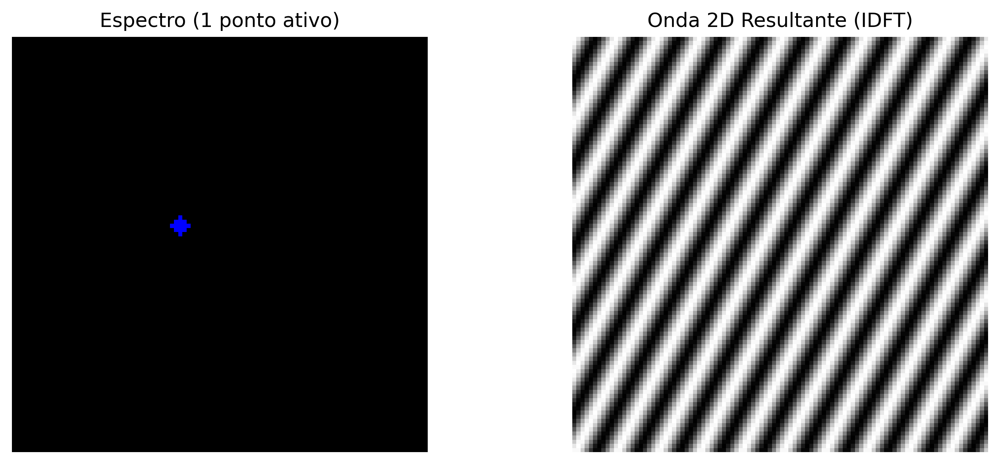
Figura 5.3: Toda frequência no espectro (ponto isolado) corresponde a uma onda senoidal 2D rotacionada no domínio espacial.
∿ Simulatore: Sintesi di Frequenza 2D (IDFT)Spazio di Fourier
Frequenza u
10
Frequenza v
5
Distanza R
11.18
Angolo θ
26.6°
Spettro (Clicca per spostare il punto)
➔
Onda 2D risultante (Dominio Spaziale)
10
5
Figura 5.4: Simulatore interattivo della sintesi di Fourier 2D. Modifica la posizione orizzontale (\(u\)) e verticale (\(v\)) del coefficiente nello spettro di frequenze centrato e osserva come la distanza dal centro determina la frequenza spaziale (spessore) e l’angolo determina l’orientamento dell’onda sinusoidale generata.
5.3.4 Definizione Matematica
Si consideri un’immagine \(f(x,y)\) con dimensioni \(M \times N\). La sua Trasformata Discreta di Fourier 2D (DFT) è definita da:
dove \(u = 0, 1, \ldots, M-1\) e \(v = 0, 1, \ldots, N-1\) rappresentano le frequenze discrete nelle direzioni orizzontale e verticale, rispettivamente. Il termine esponenziale corrisponde a una sinusoide bidimensionale, la cui frequenza e orientazione sono determinate dagli indici \((u,v)\).
La Trasformata Discreta Inversa di Fourier 2D (IDFT) ricostruisce l’immagine originale a partire dai suoi coefficienti:
Le Equazioni Equazione 5.1 e Equazione 5.2 mostrano che la DFT e la IDFT formano una coppia di trasformazioni: la prima converte l’immagine nel dominio della frequenza, mentre la seconda ricostruisce esattamente l’immagine originale a partire dai suoi coefficienti.
NotaSul simbolo \(j\)
Il termine \(j\) denota l’unità immaginaria, definita da \(j^2 = -1\). In ingegneria e nell’elaborazione dei segnali, si adotta \(j\) invece di \(i\) per evitare conflitti con la notazione della corrente elettrica. Il suo utilizzo nell’esponenziale complessa, governato dalla formula di Eulero (\(e^{j\theta} = \cos\theta + j\sin\theta\)), consente di rappresentare in modo compatto l’ampiezza e la fase di ciascuna frequenza spaziale presente nell’immagine.
NotaChe cos’è il componente DC?
Il coefficiente \(F(0,0)\), denominato componente DC (Direct Current), è uguale alla somma delle intensità di tutti i pixel dell’immagine (vedi Figura 5.5):
\[
F(0,0)=MN\,\bar{f},
\]
dove \(\bar{f}\) è l’intensità media dell’immagine. Per questo motivo, il componente DC rappresenta il livello medio di intensità e, nella maggior parte delle immagini naturali, possiede la maggiore ampiezza dello spettro.
Gli altri coefficienti rappresentano variazioni attorno a tale media. Dopo l’applicazione del FFT Shift, il componente DC viene spostato al centro dello spettro, concentrando le basse frequenze nella regione centrale e le alte frequenze ai bordi.
Anatomia dello Spettro di Fourier 2D (dopo fftshift)
Figura 5.5: Diagramma concettuale dello spettro di Fourier 2D centrato.
5.3.5 Magnitudine e Fase
Ogni coefficiente della Trasformata Discreta di Fourier (DFT) è un numero complesso e può essere scritto come
\[
F(u,v)=R(u,v)+j\,I(u,v),
\]
dove \(R(u,v)\) e \(I(u,v)\) corrispondono, rispettivamente, alle parti reale e immaginaria del coefficiente. Dall’Equazione Equazione 5.1 si ottiene
Pertanto, ogni coefficiente può anche essere scritto nella sua forma polare,
\[
F(u,v)=|F(u,v)|\,e^{j\phi(u,v)}.
\]
Lo spettro di Fourier può quindi essere visualizzato mediante due immagini distinte: lo spettro di magnitudine, generalmente utilizzato per analizzare la distribuzione delle frequenze, e lo spettro di fase, che descrive l’organizzazione spaziale delle componenti sinusoidali.
Sebbene lo spettro di magnitudine sia il più utilizzato per l’ispezione visiva, la fase contiene gran parte delle informazioni strutturali dell’immagine. La combinazione di magnitudine e fase consente di ricostruire esattamente l’immagine originale tramite la IDFT.
5.3.6 Cosa trasportano l’ampiezza e la fase?
Una dimostrazione classica consiste nel combinare l’ampiezza di un’immagine con la fase di un’altra e ricostruire il risultato. Questo esperimento evidenzia che:
La fase preserva la struttura spaziale dell’immagine, inclusa la posizione degli oggetti, i loro contorni e la loro geometria. Piccole alterazioni nella fase possono provocare grandi cambiamenti visivi.
L’ampiezza controlla come l’energia è distribuita tra le frequenze spaziali, influenzando principalmente il contrasto e la tessitura.
Quando un’immagine viene ricostruita con l’ampiezza di A e la fase di B, il risultato tende a somigliare più a B che ad A, evidenziando che la fase è il componente principale responsabile dell’organizzazione spaziale della scena. Tuttavia, l’ampiezza rimane importante, poiché modula il contrasto delle strutture ricostruite. Pertanto, una ricostruzione fedele dipende dalla combinazione coerente tra ampiezza e fase.
Un esempio di questo comportamento è presentato in Figura 5.6.
NotaAnalogia con l’Audio: Limitazioni e Precauzioni
La fase di un segnale svolge ruoli distinti nell’audio e nelle immagini:
Audio stereo o multicanale: la fase relativa tra i canali è fondamentale per la percezione della posizione delle sorgenti sonore, tramite le differenze interaurali di tempo (ITD, Interaural Time Differences).
Audio monaurale: la fase assoluta esercita una scarsa influenza percettiva diretta.
Immagini (DFT): la fase è il fattore principale responsabile dell’organizzazione spaziale della scena, mentre l’ampiezza modula il contrasto e la distribuzione dell’energia tra le frequenze.
In entrambi i domini, l’ampiezza è legata all’intensità delle componenti di frequenza: nell’audio, influenza il timbro e l’intensità percepita; nelle immagini, influenza il contrasto e la tessitura.
import numpy as np, cv2, os # [pdi] passthrough: garante imports desta trilha# ── Esperimento: L'Importanza della Fase ─────────────────────────────────────# ── Caricamento dell'immagine ────────────────────────────────────────────────url ="https://upload.wikimedia.org/wikipedia/commons/2/25/GAZI.MD.AHAD_11.jpg"caminho ="imagens/coins.jpg"ifnot os.path.exists(caminho): os.makedirs("imagens", exist_ok=True) img_obj = mm.read(url, pil=True) mm.write(img_obj, caminho)else: img_obj = mm.read(caminho, pil=True)img_color = np.array(img_obj)img_gray = mm.gray(img_color)img_a = cv2.resize(img_gray, (400, 400))# Creare un'immagine B sintetica (motivo geometrico)img_b = np.zeros((400, 400), dtype=np.uint8)cv2.rectangle(img_b, (100, 100), (300, 300), 255, -1)cv2.circle(img_b, (200, 200), 150, 128, 10)FA = np.fft.fft2(img_a)FB = np.fft.fft2(img_b)# Scambio di Faserec_A_mag_B_fase = np.real(np.fft.ifft2(np.abs(FA) * np.exp(1j* np.angle(FB))))rec_B_mag_A_fase = np.real(np.fft.ifft2(np.abs(FB) * np.exp(1j* np.angle(FA))))mm.show( [img_a, img_b, rec_A_mag_B_fase, rec_B_mag_A_fase], titles=["Immagine A", "Immagine B", "Mag(A) + Fase(B)", "Mag(B) + Fase(A)"], cols=4, figsize=(16, 4))print("💡 La fase preserva bordi e contorni; la magnitudine controlla contrasto e")print("texture. Nell'audio stereo, la fase influisce sulla localizzazione spaziale; nelle")print("immagini, determina l'organizzazione della scena.")# [pdi:state-io] auto-gerado — não editar à mãoimport os as _pdi_os; _pdi_os.makedirs("tmp/state", exist_ok=True)mm.write(img_gray, "tmp/state/img_gray_20.png")# [pdi:state-io:end]
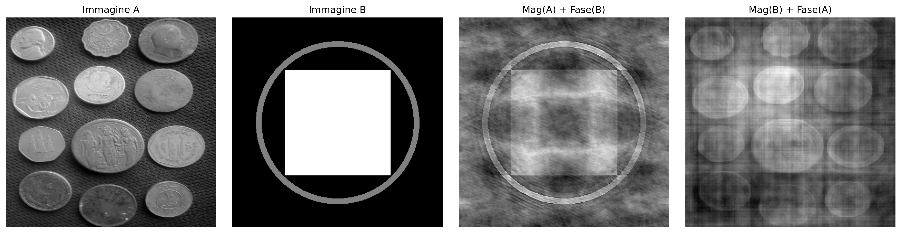
Figura 5.6: Esperimento di cambio di fase: Immagine A (monete) e Immagine B (motivo geometrico) ricostruite con magnitudini e fasi scambiate. Il risultato mostra che la struttura visiva è molto più sensibile alla fase che alla magnitudine: quando la fase di B viene mantenuta, l’immagine risultante preserva l’organizzazione spaziale di B, anche con la magnitudine di A. La magnitudine, a sua volta, influenza principalmente il contrasto e la texture. Si noti che la qualità della ricostruzione non è perfetta — ci sono artefatti visibili —, evidenziando l’interdipendenza tra fase e magnitudine per una rappresentazione fedele dell’immagine.
💡 La fase preserva bordi e contorni; la magnitudine controlla contrasto e
texture. Nell'audio stereo, la fase influisce sulla localizzazione spaziale; nelle
immagini, determina l'organizzazione della scena.
5.4 Teorema della Convoluzione e Strategie di Filtraggio
Il Teorema della Convoluzione stabilisce una relazione fondamentale tra il dominio spaziale e quello delle frequenze:
dove \(\circledast\) rappresenta la convoluzione circolare discreta. Pertanto, la convoluzione tra un’immagine \(f(x,y)\) e un filtro \(h(x,y)\) può essere sostituita dalla moltiplicazione dei loro spettri.
In pratica, per ottenere lo stesso risultato della convoluzione lineare eseguita nel dominio spaziale, si applica il zero-padding prima della Trasformata Rapida di Fourier (FFT), evitando artefatti ai bordi dell’immagine.
Tuttavia, la filtrazione nel dominio delle frequenze non è sempre l’alternativa più efficiente. Per filtri come quello gaussiano e il filtro della media (Box Filter), la proprietà di separabilità consente di ridurre significativamente il costo computazionale della convoluzione nel dominio spaziale.
5.4.1Kernel Separabile vs. Non Separabile
Un kernel separabile può essere scritto come il prodotto esterno di due vettori unidimensionali,
\[
H = v\,h^T,
\]
consentendo di sostituire la convoluzione bidimensionale con due convoluzioni unidimensionali consecutive: una nella direzione orizzontale e una in quella verticale.
Un kernel non separabile, invece, non ammette tale decomposizione e, pertanto, la sua convoluzione deve essere eseguita direttamente sull’intorno bidimensionale.
In pratica, per un kernel di dimensione \(K \times K\), la convoluzione diretta richiede \(K^2\) moltiplicazioni per pixel, mentre un kernel separabile ne richiede solo \(2K\), riducendo significativamente il costo computazionale.
5.4.2 Analisi dell’Efficienza Computazionale
Si consideri un’immagine di dimensioni \(M \times N\) e un filtro quadrato di dimensione \(K \times K\). La Tabella 5.2 confronta la complessità delle principali strategie di filtraggio.
Tabella 5.2: Confronto della complessità della convoluzione diretta, separabile e tramite Trasformata Rapida di Fourier (FFT).
Metodo di filtraggio
Complessità asintotica
Dipendenza da \(K\)
Applicazione tipica
Spatiale non separabile
\(\mathcal{O}(MNK^2)\)
Quadratica
Kernel piccoli e non separabili
Spatiale separabile
\(\mathcal{O}(MNK)\)
Lineare
Filtri Gaussiano e della media
Tramite FFT
\(\mathcal{O}(MN\log(MN))\)
Indipendente da \(K\)
Kernel grandi
Per kernel piccoli, la convoluzione spaziale, specialmente quando il filtro è separabile, risulta solitamente più efficiente grazie al basso costo delle operazioni. All’aumentare della dimensione del kernel, il filtraggio tramite FFT diventa più vantaggioso, poiché il suo costo è praticamente indipendente dalla dimensione del filtro.
5.4.3 Discussione dei risultati sperimentali
Il grafico ottenuto nella prova con l’immagine delle monete (\(2560 \times 1920\)), presentato nella Figura 5.7, conferma il comportamento previsto dall’analisi della complessità computazionale.
Convoluzione non separabile (\(\mathcal{O}(MNK^2)\))
La convoluzione diretta presenta una crescita quadratica con la dimensione del kernel. Per valori piccoli di \(K\), il costo è basso, ma aumenta rapidamente man mano che il kernel cresce, diventando impraticabile per applicazioni in tempo reale.
Filtraggio tramite FFT (\(\mathcal{O}(MN \log(MN))\))
Il costo della FFT dipende solo dalla dimensione dell’immagine, essendo indipendente da \(K\). Pertanto, le sue prestazioni rimangono approssimativamente costanti al variare del kernel, rendendola vantaggiosa per filtri grandi o non separabili.
Convoluzione separabile (\(\mathcal{O}(MNK)\))
La scomposizione del kernel in due filtri monodimensionali riduce significativamente il costo computazionale. In pratica, questo approccio tende ad essere il più efficiente per filtri separabili, specialmente in implementazioni ottimizzate.
In generale, la scelta del metodo dipende dalla dimensione e dalla struttura del kernel. I filtri separabili sono più efficienti nel dominio spaziale, mentre la FFT diventa più vantaggiosa per kernel grandi o per convoluzioni multiple nel dominio della frequenza.
\[
g = \mathcal{F}^{-1}\bigl[\mathcal{F}(f)\cdot \mathcal{F}(h)\bigr]
\quad \text{(FFT)}
\qquad
g = f \circledast h
\quad \text{(convoluzione diretta)}
\qquad
g = (f \circledast v) \circledast h^T
\quad \text{(separabile)}
\tag{5.4}\]
dove:
\(f(x,y)\) rappresenta l’immagine di ingresso;
\(h(x,y)\) è il kernel bidimensionale del filtro;
\(v\) e \(h^T\) sono, rispettivamente, i vettori verticale e orizzontale che compongono il kernel separabile.
%%writefile tmp/fig_05_conv_eficiencia.cpp#define MM_OUT "tmp/fig_05_conv_eficiencia.png"// Compile: g++-std=c++17-o program program.cpp $(pkg-config --cflags --libs opencv4)#include <vector>#include <string>#include <cmath>#include "morph.hpp"#include <filesystem>#ifndef MM_OUT#endifint main() {// Trilha C++: curvas de CUSTO relativo (contagem de operacoes) — a forma das// curvas (K^2 vs 2K vs log N) e o que importa; a trilha py mede tempos reais. std::vector<double> K = {3, 7, 11, 15, 21, 31, 41, 51}; double N2 =256.0*256.0; std::vector<double> t_nao_sep; std::vector<double> t_sep; std::vector<double> t_fft;for (double k : K) { t_nao_sep.push_back(N2 * k * k /1e6); t_sep.push_back(N2 *2.0* k /1e6); t_fft.push_back(N2 * std::log2(N2) /1e6); } std::vector<std::vector<double>> xs = {K, K, K}; std::vector<std::vector<double>> ys = {t_nao_sep, t_sep, t_fft}; std::vector<std::string> labels = {"Nao Separavel O(N^2 K^2)", "Separavel O(N^2 . 2K)", "Via FFT O(N^2 log N)" }; mm::Image chart = mm::lineChart( xs, ys, labels, {}, // cores vazias - usa padrão"Custo relativo: Espacial vs Frequencia","Tamanho do kernel K", "Operacoes (x10^6)" ); mm::show(std::vector<mm::Image>{chart}, MM_OUT, std::vector<std::string>{"Comparacao de complexidade"}, 1);// [pdi:panel-io] auto-generated — do not edit by handstd::filesystem::create_directories("tmp");mm::write(chart, "tmp/fig_05_conv_eficiencia_0.png");// [pdi:panel-io:end]return0;}
import os as _os_sent ='tmp/fig_05_conv_eficiencia_0.png'if _os.path.exists(_sent): mm.show( [ mm.read("tmp/fig_05_conv_eficiencia_0.png"), ], titles=['Comparacao de complexidade', ], cols=1, )else:print("figura indisponivel nesta trilha: o programa C++ compilou mas nao gerou "+ _sent +" (ver a versao Python)")
Figura 5.7: Comparação de eficiência: Convolução Não Separável (Espacial 2D), Separável (Espacial 1D) e via FFT.
ImportanteIl problema della convoluzione circolare (wrap-around)
La Trasformata Discreta di Fourier (DFT) assume che l’immagine sia estesa periodicamente nello spazio, cioè che i suoi bordi si ripetano indefinitamente.
In questa condizione, la moltiplicazione nel dominio della frequenza corrisponde a una convoluzione circolare nel dominio spaziale. Di conseguenza, regioni opposte dell’immagine (alto e basso, sinistra e destra) iniziano a interagire artificialmente, come illustrato nella Figura 5.8..
L’applicazione del zero-padding prima della FFT riduce questo effetto estendendo l’immagine con valori nulli ai bordi, avvicinando il risultato alla convoluzione lineare. Questo comportamento può essere interpretato alla luce del Teorema della Convoluzione, presentato nella Figura 5.9..
%%writefile tmp/fig_05_padding_error.cpp#define MM_OUT "tmp/fig_05_padding_error.png"//| label: fig-05-padding-error//| fig-cap: "Sem *padding*, um deslocamento severo faz a imagem vazar para o lado oposto (convolução circular)."//| echo: true//| output: true#include <opencv2/opencv.hpp>#include <complex>#include <cmath>#include <vector>#include <string>#include "morph.hpp"#include <filesystem>int main() {// [pdi:state-io] auto-generated — do not edit by handmm::Image img_gray = mm::_read_state("tmp/state/img_gray_20.png");// [pdi:state-io:end]// ── Definir M e N ─────────────────────────────────────────────────────────────int M = img_gray.h;// linha adicionadaint N = img_gray.w;// Simulação de um filtro de deslocamento brutal cv::Mat H_shift(M, N, CV_64FC2, cv::Scalar(0, 0));for (int u =0; u < M; u++) {for (int v =0; v < N; v++) { double phase =-2.0* M_PI * (u *120.0/ M + v *120.0/ N); H_shift.at<cv::Vec2d>(u, v) = {std::cos(phase), std::sin(phase)}; } }// Filtragem SEM padding (causa o wrap-around)// F_img = np.fft.fft2(img_gray) → FFT da imagem em ponto flutuante cv::Mat img_gray_f; cv::Mat img_gray_cv = img_gray;// conversão implícita img_gray_cv.convertTo(img_gray_f, CV_64F); cv::Mat F_img; cv::dft(img_gray_f, F_img, cv::DFT_COMPLEX_OUTPUT);// Multiplicação no domínio da frequência cv::Mat F_product; cv::mulSpectrums(F_img, H_shift, F_product, 0);// Inversa com escala e saída real cv::Mat img_vazada; cv::idft(F_product, img_vazada, cv::DFT_SCALE | cv::DFT_REAL_OUTPUT);// Normalização para visualização cv::Mat img_vazada_vis; cv::normalize(img_vazada, img_vazada_vis, 0, 255, cv::NORM_MINMAX, CV_8U);// Exibição mm::Image img_vazada_vis_img = img_vazada_vis; mm::show({img_gray, img_vazada_vis_img}, MM_OUT, {"Original", "Filtragem s/ Padding (Vazamento)"}, 2);// [pdi:panel-io] auto-generated — do not edit by handstd::filesystem::create_directories("tmp");mm::write(img_gray, "tmp/fig_05_padding_error_0.png");mm::write(img_vazada_vis, "tmp/fig_05_padding_error_1.png");// [pdi:panel-io:end]return0;}
import os as _os_sent ='tmp/fig_05_padding_error_0.png'if _os.path.exists(_sent): mm.show( [ mm.read("tmp/fig_05_padding_error_0.png"), mm.read("tmp/fig_05_padding_error_1.png"), ], titles=['Original','Filtragem s/ Padding (Vazamento)', ], cols=2, figsize=(10, 4), )else:print("figura indisponivel nesta trilha: o programa C++ compilou mas nao gerou "+ _sent +" (ver a versao Python)")
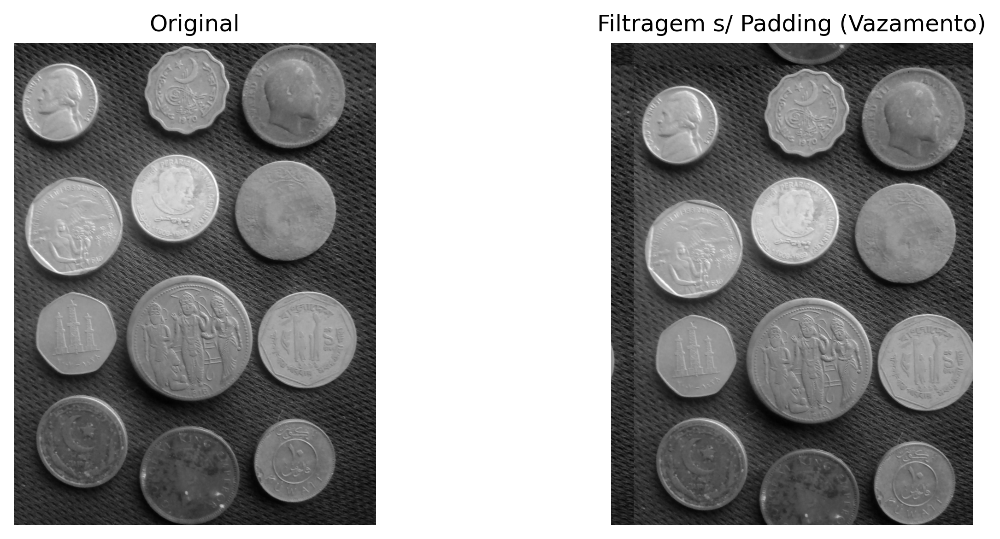
Figura 5.8: Sem padding, um deslocamento severo faz a imagem vazar para o lado oposto (convolução circular).
%%writefile tmp/fig_05_conv_teorema.cpp#define MM_OUT "tmp/fig_05_conv_teorema.png"//| label: fig-05-conv-teorema//| fig-cap: "Teorema della Convoluzione: filtrare nel dominio spaziale (Gaussiana) equivale a moltiplicare lo spettro per $H(u,v)$ in frequenza. Le uscite coincidono visivamente."//| echo: true//| output: true#include <opencv2/opencv.hpp>#include <vector>#include <string>#include "morph.hpp"#include <filesystem>int main() {// [pdi:state-io] auto-generated — do not edit by handmm::Image img_gray = mm::_read_state("tmp/state/img_gray_20.png");// [pdi:state-io:end]// Stessa sfocatura attraverso due percorsi: spazio vs. frequenza.int M = img_gray.h;int N = img_gray.w; cv::Mat H = mm::gaussFilter(M, N, 30);// H(u,v): trasferimento passa-basso gaussiano mm::Image f_freq = mm::freqFilter(img_gray, H);// convoluzione tramite moltiplicazione in frequenza// Applica la stessa sfocatura spaziale (Gaussiana 31x31 con sigma=5) cv::Mat img_mat(img_gray.h, img_gray.w, CV_8UC1, img_gray.data.data()); cv::Mat blurred; cv::GaussianBlur(img_mat, blurred, cv::Size(31, 31), 5); mm::Image f_esp(blurred); mm::show( std::vector<mm::Image>{img_gray, f_esp, f_freq}, MM_OUT, {"Originale", "Spazio: Gaussiana", "Frequenza: H(u,v).F(u,v)"},3 );// [pdi:panel-io] auto-generated — do not edit by handstd::filesystem::create_directories("tmp");mm::write(img_gray, "tmp/fig_05_conv_teorema_0.png");mm::write(f_esp, "tmp/fig_05_conv_teorema_1.png");mm::write(f_freq, "tmp/fig_05_conv_teorema_2.png");// [pdi:panel-io:end]return0;}
import os as _os_sent ='tmp/fig_05_conv_teorema_0.png'if _os.path.exists(_sent): mm.show( [ mm.read("tmp/fig_05_conv_teorema_0.png"), mm.read("tmp/fig_05_conv_teorema_1.png"), mm.read("tmp/fig_05_conv_teorema_2.png"), ], titles=['Original','Espaco: Gaussiana','Frequencia: H(u,v).F(u,v)', ], cols=3, )else:print("figura indisponivel nesta trilha: o programa C++ compilou mas nao gerou "+ _sent +" (ver a versao Python)")
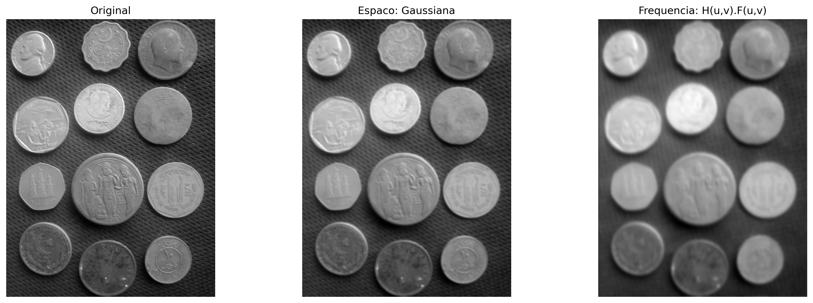
Figura 5.9: Teorema da Convolução: filtrar no domínio do espaço (Gaussiana) equivale a multiplicar o espectro por \(H(u,v)\) na frequência. As saídas coincidem visualmente.
NotaSulla differenza numerica
La differenza residua dell’ordine di \(10^{-13}\) non viola il Teorema della Convoluzione, ma riflette limitazioni computazionali inerenti all’aritmetica a virgola mobile (doppia precisione, ~\(10^{-16}\)) e all’ordine delle operazioni tra i due metodi:
Convoluzione spaziale: somma ponderata di vicini con arrotondamenti successivi.
Convoluzione in frequenza: coinvolge tre trasformate FFT e una moltiplicazione complessa, soggetta a errori di troncamento e quantizzazione.
Pertanto, l’uguaglianza teorica è esatta, ma l’implementazione numerica produce una differenza praticamente nulla (errore relativo < \(10^{-12}\)), confermando il teorema entro la precisione della macchina.
5.5 Filtri nel Dominio delle Frequenze
Un filtro nel dominio delle frequenze può essere interpretato come una funzione di trasferimento applicata allo spettro dell’immagine. In questa rappresentazione, ogni coefficiente di frequenza viene moltiplicato per un valore compreso tra 0 e 1, che determina la sua attenuazione o preservazione. La forma di questa funzione definisce l’effetto visivo del filtro.
Taglio netto e ringing. I filtri ideali con transizione istantanea a una frequenza di taglio \(D_0\) producono discontinuità nel dominio delle frequenze. Questa discontinuità si riflette nel dominio spaziale come oscillazioni in prossimità dei bordi, note come ringing. Questo effetto è associato alla convoluzione con funzioni di supporto infinito nello spazio, come la funzione sinc, come illustrato nella Figura 5.10.
Filtri con transizione graduale. Alternative come i filtri Gaussiano e Butterworth attenuano la transizione tra regioni di passaggio e di reiezione, riducendo il ringing. Di contro, tale attenuazione implica un confine di separazione meno definito tra frequenze preservate e attenuate.
%%writefile tmp/fig_05_conv_teorema_zoom.cpp#define MM_OUT "tmp/fig_05_conv_teorema_zoom.png"//| label: fig-05-conv-teorema-zoom//| fig-cap: "A Dualidade Perigosa: o corte abrupto na Frequência (cilindro Ideal) vira obrigatoriamente uma *sinc* no espaço. Suas ondulações causam o *ringing* fantasma nas bordas da imagem."//| echo: true//| output: true// Filtro Ideal na frequência (cilindro) e sua resposta espacial (sinc 2D).#include <opencv2/opencv.hpp>#include "morph.hpp"#include <vector>#include <string>#include <filesystem>int main() {int N =128; cv::Mat H_freq = mm::idealFilter(N, N, 20);//1 dentro do raio 20, 0 fora mm::Image h_space = mm::spatialKernel(H_freq);// ifft2(H) -> ondulações da sinc (ringing) mm::show( {H_freq, h_space}, MM_OUT, {"Frequencia: filtro Ideal (cilindro)","Espaco: ondulacoes da sinc (causa do ringing)", },2 );// [pdi:panel-io] auto-generated — do not edit by handstd::filesystem::create_directories("tmp");mm::write(H_freq, "tmp/fig_05_conv_teorema_zoom_0.png");mm::write(h_space, "tmp/fig_05_conv_teorema_zoom_1.png");// [pdi:panel-io:end]return0;}
[1] Frequencia: filtro Ideal (cilindro)
[2] Espaco: ondulacoes da sinc (causa do ringing)
import os as _os_sent ='tmp/fig_05_conv_teorema_zoom_0.png'if _os.path.exists(_sent): mm.show( [ mm.read("tmp/fig_05_conv_teorema_zoom_0.png"), mm.read("tmp/fig_05_conv_teorema_zoom_1.png"), ], titles=['Frequencia: filtro Ideal (cilindro)','Espaco: ondulacoes da sinc (causa do ringing)', ], cols=2, )else:print("figura indisponivel nesta trilha: o programa C++ compilou mas nao gerou "+ _sent +" (ver a versao Python)")
Figura 5.10: A Dualidade Perigosa: o corte abrupto na Frequência (cilindro Ideal) vira obrigatoriamente uma sinc no espaço. Suas ondulações causam o ringing fantasma nas bordas da imagem.
5.5.1 Filtri Passa-Basso
I filtri passa-basso attenuano le componenti ad alta frequenza, producendo un appiattimento dell’immagine e una riduzione del rumore. Dopo la centralizzazione dello spettro (FFT Shift), la distanza di ciascun punto dal centro è data da:
Il taglio netto a \(D_0\) introduce discontinuità nel dominio delle frequenze, causando oscillazioni nel dominio spaziale note come ringing. Questo effetto è associato alla convoluzione con funzioni a supporto infinito.
La regolarità della funzione gaussiana nel dominio delle frequenze evita discontinuità, eliminando il ringing e producendo una transizione graduale tra frequenze preservate e attenuate.
Filtro di Butterworth (LPFB) di ordine \(n\):\[
H_{\text{BW}}(u,v) = \frac{1}{1 + \left[D(u,v)/D_0\right]^{2n}}
\tag{5.8}\]
Il parametro \(n\) controlla la gradualità della transizione tra l’attenuazione e il passaggio delle frequenze. Valori piccoli producono transizioni morbide, mentre valori grandi avvicinano il comportamento al filtro ideale, con un maggiore rischio di ringing. Un esempio comparativo è mostrato in Figura 5.11.
Profili dei Filtri Passa-Basso — confronto visivo (D₀ = 30)
All'aumentare dell'ordine di Butterworth, il profilo si avvicina al filtro Ideale — e il ringing aumenta.
Figura 5.11: Filtri passa-basso.
5.5.2 Filtri Passa-Alto e Passa-Banda
I filtri passa-alto possono essere ottenuti da un filtro passa-basso complementare, definito come:
\[
H_{\text{HP}}(u,v) = 1 - H_{\text{LP}}(u,v)
\]
Questo tipo di filtro preserva le componenti ad alta frequenza, evidenziando bordi e dettagli, mentre attenua le regioni a variazione graduale.
I filtri passa-banda preservano solo una banda intermedia di frequenze, limitata da due raggi \(D_L\) e \(D_H\):
Questo tipo di filtraggio è utile quando si desidera rimuovere simultaneamente le componenti a bassa e ad alta frequenza, preservando solo le strutture di scala intermedia.
Un’applicazione importante è la rimozione del rumore periodico, in cui i pattern regolari appaiono come picchi localizzati nello spettro di magnitudine. Questi picchi possono essere attenuati mediante filtri notch (reietta-banda), posizionati specificamente sulle frequenze indesiderate.
[1] Original
[2] LPF Ideal
[3] LPF Gaussiano
[4] LPF Butterworth (n=2)
[5] H Ideal
[6] H Gaussiano
[7] H Butterworth
[8] Perfis H(u,v)
import os as _os_sent ='tmp/fig_05_filtros_freq.png'if _os.path.exists(_sent): mm.show(mm.read("tmp/fig_05_filtros_freq.png"), figsize=(16, 9))else:print("figura indisponivel nesta trilha: o programa C++ compilou mas nao gerou "+ _sent +" (ver a versao Python)")
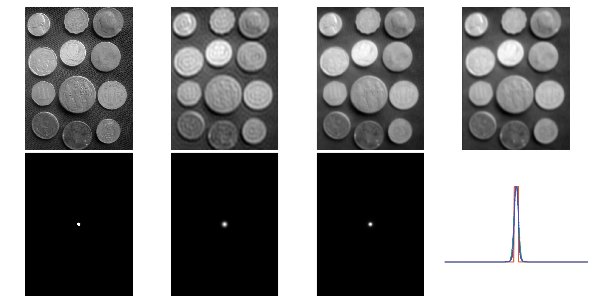
Figura 5.13: Comparação entre filtros passa-baixa: Ideal (D₀=30), Gaussiano (D₀=30) e Butterworth (D₀=30, n=2). Perfis de H(u,v) ao longo de uma linha central e imagens filtradas correspondentes.
%%writefile tmp/fig_05_filtros_passa_alta.cpp#define MM_OUT "tmp/fig_05_filtros_passa_alta.png"#include <opencv2/opencv.hpp>#include <vector>#include <string>#include "morph.hpp"#include <filesystem>int main() {// [pdi:state-io] auto-generated — do not edit by handmm::Image img_gray = mm::_read_state("tmp/state/img_gray_20.png");// [pdi:state-io:end]//| label: fig-05-filtros-passa-alta//| fig-cap: "Filtro passa-alta Gaussiano. (a) Original; (b) Filtro passa-alta (D₀=30) - as bordas das moedas e fundo texturizado são realçados."// Filtro passa-alta = complemento do passa-baixa Gaussiano (1- H_gauss),// construído com mm.gaussFilter(..., highpass=True) e aplicado via FFT.int M = img_gray.h;int N = img_gray.w; double D0 =30; cv::Mat H_alta = mm::gaussFilter(M, N, D0, true); mm::Image img_alta = mm::freqFilter(img_gray, H_alta); mm::show( std::vector<mm::Image>{img_gray, img_alta}, MM_OUT, std::vector<std::string>{"Original", "Passa-alta Gaussiano ($D_0=30$)"},2 );// [pdi:panel-io] auto-generated — do not edit by handstd::filesystem::create_directories("tmp");mm::write(img_gray, "tmp/fig_05_filtros_passa_alta_0.png");mm::write(img_alta, "tmp/fig_05_filtros_passa_alta_1.png");// [pdi:panel-io:end]return0;}
import os as _os_sent ='tmp/fig_05_filtros_passa_alta_0.png'if _os.path.exists(_sent): mm.show( [ mm.read("tmp/fig_05_filtros_passa_alta_0.png"), mm.read("tmp/fig_05_filtros_passa_alta_1.png"), ], titles=['Original','Passa-alta Gaussiano ($D_0=30$)', ], cols=2, )else:print("figura indisponivel nesta trilha: o programa C++ compilou mas nao gerou "+ _sent +" (ver a versao Python)")
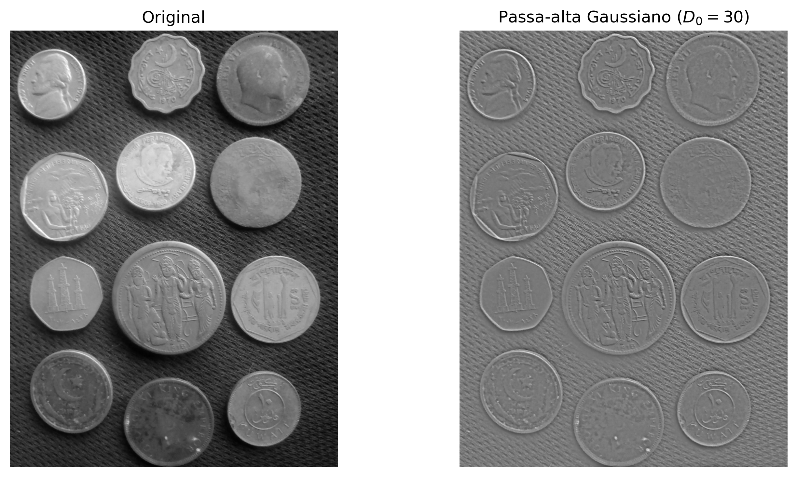
Figura 5.14: Filtro passa-alta Gaussiano. (a) Original; (b) Filtro passa-alta (D₀=30) - as bordas das moedas e fundo texturizado são realçados.
5.5.3 Rimozione del Rumore Periodico
Il rumore periodico — associato a interferenze elettriche, pattern regolari dei sensori o artefatti di scansione — appare nello spettro di Fourier come picchi puntuali simmetrici rispetto al centro.
Il filtro reietta-banda (notch) attenua selettivamente queste frequenze, preservando le altre componenti dell’immagine. Un esempio di applicazione è presentato nella Figura 5.15..
%%writefile tmp/fig_05_ruido_periodico.cpp#define MM_OUT "tmp/fig_05_ruido_periodico.png"//| label: fig-05-ruido-periodico//| fig-cap: "Remoção de ruído periódico via filtro *notch* no domínio da frequência: (a) imagem com ruído senoidal, (b) espectro mostrando os picos do ruído, (c) máscara *notch* centrada nos picos, (d) imagem restaurada."//| echo: true//| output: true// Ruído senoidal 2D-> espectro -> máscara notch nos 4 picos simétricos -> restauração.#include <opencv2/opencv.hpp>#include <iostream>#include <cmath>#include <vector>#include <string>#include <cstdio>#include "morph.hpp"int main() {// [pdi:state-io] auto-generated — do not edit by handmm::Image img_gray = mm::_read_state("tmp/state/img_gray_20.png");// [pdi:state-io:end]// img_gray já está disponível (injetado automaticamente)int h_img = img_gray.h;int w_img = img_gray.w;// Criar meshgrid X, Y equivalente cv::Mat X(h_img, w_img, CV_64F), Y(h_img, w_img, CV_64F);for (int y =0; y < h_img; y++) {for (int x =0; x < w_img; x++) { X.at<double>(y, x) = x; Y.at<double>(y, x) = y; } } double u0 =20, v0 =20;// frequências exatas do ruído// Converter img_gray para CV_64F cv::Mat img_gray64f; cv::Mat img_gray_mat = img_gray;// conversão implícita para cv::Mat img_gray_mat.convertTo(img_gray64f, CV_64F);// Calcular ruído senoidal cv::Mat ruido(h_img, w_img, CV_64F);for (int y =0; y < h_img; y++) {for (int x =0; x < w_img; x++) { ruido.at<double>(y, x) =40* sin(2* M_PI * (u0 * X.at<double>(y, x) / w_img + v0 * Y.at<double>(y, x) / h_img)); } }// Imagem ruidosa = clip(img_gray + ruido, 0, 255) cv::Mat img_ruidosa64f = img_gray64f + ruido; cv::Mat img_ruidosa; cv::threshold(img_ruidosa64f, img_ruidosa, 0, 255, cv::THRESH_TRUNC); cv::threshold(img_ruidosa, img_ruidosa, 0, 0, cv::THRESH_TOZERO); img_ruidosa.convertTo(img_ruidosa, CV_8U); mm::Image img_ruidosa_mm = img_ruidosa;// converter para mm::Image se necessário// Espectro de magnitude (log) da imagem ruidosa mm::Image mag_vis = mm::spectrumMag(img_ruidosa_mm);// Máscara notch: 1.0 em todo o plano, disco de 0.0 em cada um dos 4 picos cv::Mat mascara = cv::Mat::ones(h_img, w_img, CV_64F); double r_notch =8;int cy = h_img /2, cx = w_img /2;// Criar meshgrid yy, xx com indexing="ij" cv::Mat yy(h_img, w_img, CV_64F), xx(h_img, w_img, CV_64F);for (int y =0; y < h_img; y++) {for (int x =0; x < w_img; x++) { yy.at<double>(y, x) = y; xx.at<double>(y, x) = x; } }// Para cada par (dy, dx) nos 4 picos simétricos std::vector<std::pair<double, double>> picos = {{v0, u0}, {-v0, -u0}, {v0, -u0}, {-v0, u0}};for (auto& p : picos) { double dy = p.first, dx = p.second;for (int y =0; y < h_img; y++) {for (int x =0; x < w_img; x++) { double dist = sqrt(pow(yy.at<double>(y, x) - (cy + dy), 2) +pow(xx.at<double>(y, x) - (cx + dx), 2));if (dist <= r_notch) { mascara.at<double>(y, x) =0.0; } } } }// Visualização da máscara cv::Mat mascara_vis = mascara *255; mascara_vis.convertTo(mascara_vis, CV_8U);// Filtragem: aplica a máscara centrada como filtro no domínio da frequência mm::Image img_rest_vis = mm::freqFilter(img_ruidosa_mm, mascara);// PSNR entre original e restaurada cv::Mat img_gray_mat2 = img_gray;// re-converter para cv::Mat cv::Mat img_rest_mat = img_rest_vis;// converter mm::Image para cv::Mat double psnr = cv::PSNR(img_gray_mat2, img_rest_mat); printf("PSNR (original vs restaurada): %.2f dB\n", psnr);// Mostrar resultados std::vector<mm::Image> imagens = {img_ruidosa_mm, mag_vis, mascara_vis, img_rest_vis}; std::vector<std::string> titulos = {"Com ruído periódico","Espectro (log)","Máscara notch","Restaurada (PSNR="+ std::to_string(psnr).substr(0, 4) +" dB)" };// Corrigir título com formatação .1f char titulo_psnr[100]; sprintf(titulo_psnr, "Restaurada (PSNR=%.1f dB)", psnr); titulos[3] = titulo_psnr; mm::show(imagens, MM_OUT, titulos, 4);return0;}
PSNR (original vs restaurada): 7.46 dB
[1] Com ruído periódico
[2] Espectro (log)
[3] Máscara notch
[4] Restaurada (PSNR=7.5 dB)
import os as _os_sent ='tmp/fig_05_ruido_periodico.png'if _os.path.exists(_sent): mm.show(mm.read("tmp/fig_05_ruido_periodico.png"), figsize=(16, 4))else:print("figura indisponivel nesta trilha: o programa C++ compilou mas nao gerou "+ _sent +" (ver a versao Python)")
Figura 5.15: Remoção de ruído periódico via filtro notch no domínio da frequência: (a) imagem com ruído senoidal, (b) espectro mostrando os picos do ruído, (c) máscara notch centrada nos picos, (d) imagem restaurada.
📌 Sintesi — Filtri Spettrali
Filtro
Effetto visivo
Artefatto
Uso
Passa-basso ideale
Attenuazione intensa
Ringing
Illustrativo
Passa-basso Gaussiano
Attenuazione graduale
Non presenta ringing
Attenuazione generale
Passa-basso Butterworth
Attenuazione controllata
Ringing (ordini elevati)
Compromesso tra attenuazione e selettività
Passa-alto
Enfatizzazione dei bordi
Amplificazione del rumore
Rilevamento dei contorni
Notch
Rimozione selettiva delle frequenze
Possibili distorsioni locali
Rimozione del rumore periodico
La progettazione dei filtri nel dominio della frequenza consiste nella definizione di maschere spettrali. Tuttavia, effetti nel dominio spaziale, come ringing e sfocatura, emergono direttamente da queste scelte nello spettro.
5.6Wavelet e Multirisoluzione
La Trasformata di Fourier decompone il segnale in frequenze globali: ogni coefficiente \(F(u,v)\) riceve contributi dall’intera immagine, senza informazioni esplicite sulla localizzazione spaziale di tali frequenze. Pertanto, strutture localizzate, come i bordi, sono rappresentate in modo distribuito nello spettro.
Le wavelet (ondine) superano questa limitazione utilizzando funzioni base localizzate nello spazio, che possono essere traslate e scalate. Queste funzioni possiedono supporto compatto, ossia sono diverse da zero solo in una regione finita del dominio, consentendo una rappresentazione simultanea in termini di frequenza e localizzazione spaziale.
5.6.1 Il Limite della Trasformata di Fourier: localizzazione spaziale
La Trasformata di Fourier descrive con precisione quali frequenze sono presenti in un segnale, ma non rappresenta esplicitamente dove queste frequenze si verificano nello spazio.
Nell’esperimento presentato nella Figura 5.16, due immagini con strutture localizzate in posizioni diverse producono spettri di magnitudine praticamente identici. Ciò accade perché la rappresentazione di Fourier è globale: ogni coefficiente riceve un contributo dall’intera immagine.
Di conseguenza, lo spettro di magnitudine non rappresenta esplicitamente la localizzazione dei bordi o di altre strutture, ma solo la distribuzione delle frequenze presenti. Questa limitazione ha motivato lo sviluppo di rappresentazioni multirisoluzione, come la Trasformata Wavelet Discreta (DWT), in grado di descrivere simultaneamente la frequenza e la localizzazione spaziale delle strutture dell’immagine.
%%writefile tmp/fig_05_fracasso_fourier.cpp#define MM_OUT "tmp/fig_05_fracasso_fourier.png"#include <opencv2/opencv.hpp>#include <vector>#include <string>#include "morph.hpp"#include <filesystem>//| label: fig-05-fracasso-fourier//| fig-cap: "Fourier global é cego para a posição. Os espectros não dizem onde as bordas estão."//| echo: true//| output: trueint main() {// Cria os dois sinais binários: cruzes em posições diferentes cv::Mat img_sinal1 = cv::Mat::zeros(128, 128, CV_8UC1); img_sinal1(cv::Rect(20, 0, 5, 128)).setTo(1); img_sinal1(cv::Rect(0, 100, 128, 5)).setTo(1); cv::Mat img_sinal2 = cv::Mat::zeros(128, 128, CV_8UC1); img_sinal2(cv::Rect(90, 0, 5, 128)).setTo(1); img_sinal2(cv::Rect(0, 30, 128, 5)).setTo(1);// Calcula a magnitude do espectro de Fourier (log(1+|F|)) para cada sinal mm::Image mag1 = mm::spectrumMag(mm::Image(img_sinal1)); mm::Image mag2 = mm::spectrumMag(mm::Image(img_sinal2));// Exibe os sinais e seus espectros mm::show({mm::Image(img_sinal1), mag1, mm::Image(img_sinal2), mag2}, MM_OUT, {"Sinal A", "Espectro A", "Sinal B (Deslocado)", "Espectro B"},4);// [pdi:panel-io] auto-generated — do not edit by handstd::filesystem::create_directories("tmp");mm::write(img_sinal1, "tmp/fig_05_fracasso_fourier_0.png");mm::write(mag1, "tmp/fig_05_fracasso_fourier_1.png");mm::write(img_sinal2, "tmp/fig_05_fracasso_fourier_2.png");mm::write(mag2, "tmp/fig_05_fracasso_fourier_3.png");// [pdi:panel-io:end]return0;}
[1] Sinal A
[2] Espectro A
[3] Sinal B (Deslocado)
[4] Espectro B
import os as _os_sent ='tmp/fig_05_fracasso_fourier_0.png'if _os.path.exists(_sent): mm.show( [ mm.read("tmp/fig_05_fracasso_fourier_0.png"), mm.read("tmp/fig_05_fracasso_fourier_1.png"), mm.read("tmp/fig_05_fracasso_fourier_2.png"), mm.read("tmp/fig_05_fracasso_fourier_3.png"), ], titles=['Sinal A','Espectro A','Sinal B (Deslocado)','Espectro B', ], cols=4, figsize=(14, 4), )else:print("figura indisponivel nesta trilha: o programa C++ compilou mas nao gerou "+ _sent +" (ver a versao Python)")
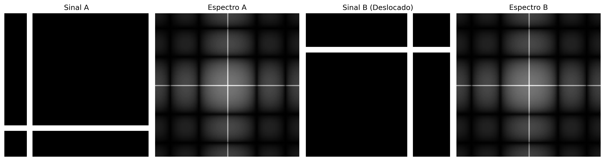
Figura 5.16: Fourier global é cego para a posição. Os espectros não dizem onde as bordas estão.
5.6.2 Trasformata Wavelet Discreta 2D
La Trasformata Wavelet Discreta (DWT) applica, separatamente nelle direzioni orizzontale e verticale, due filtri complementari: un passa-basso\(h\) (approssimazione) e un passa-alto\(g\) (dettagli), seguiti da sottocampionamento per un fattore di 2 in ciascuna dimensione. Questo processo produce quattro sottobande, i cui nomi indicano la combinazione dei filtri applicati in ciascuna direzione (L = Low-pass, passa-basso; H = High-pass, passa-alto). Le caratteristiche di ciascuna sottobanda sono riassunte nella Tabella 5.3.
Tabella 5.3: Sottobande prodotte dalla Trasformata Wavelet Discreta 2D (DWT), indicando i filtri applicati in ciascuna direzione e il contenuto predominante di ciascuna componente.
Sottobanda
Filtri applicati
Contenuto visivo
LL
basso × basso
Approssimazione dell’immagine (versione smussata e ridotta)
LH
basso × alto
Bordi orizzontali e variazioni verticali
HL
alto × basso
Bordi verticali e variazioni orizzontali
HH
alto × alto
Dettagli diagonali e trame
La decomposizione può essere applicata ricorsivamente sulla sottobanda LL, generando una rappresentazione multirisoluzione. Dopo \(J\) livelli, si ottiene una struttura con \(3J+1\) sottobande, in cui ogni nuovo livello riduce la risoluzione della componente di approssimazione.
NotaCollegamento con le CNN
La decomposizione multirisoluzione delle wavelet possiede una relazione concettuale con le rappresentazioni gerarchiche utilizzate nelle reti neurali convoluzionali (CNN). In entrambi i casi, successive fasi di filtraggio e riduzione della risoluzione producono descrizioni sempre più astratte dell’immagine. Tuttavia, le wavelet utilizzano filtri matematicamente definiti e ricostruibili, mentre le CNN apprendono i propri filtri durante l’addestramento.
5.6.3 Famiglie di Wavelet
Diverse famiglie di wavelet presentano compromessi distinti tra supporto spaziale, regolarità e capacità di compressione. Il supporto corrisponde all’estensione della funzione wavelet nel dominio spaziale: quanto più piccolo è il supporto, tanto più localizzata è la funzione; quanto più grande, tanto più liscia tende a essere la sua rappresentazione, sebbene con un costo computazionale maggiore. La Tabella 5.4 confronta alcune delle famiglie più utilizzate.
Tabella 5.4: Confronto tra famiglie di wavelet, evidenziando la lunghezza del supporto, il numero di momenti nulli, la simmetria e le applicazioni tipiche.
Wavelet
Lunghezza del supporto
Momenti nulli
Simmetria
Uso tipico
Haar
2
1
Asimmetrica
Introduzione e analisi di base
Daubechies db4
8
4
Asimmetrica
Compressione e analisi generale
Symlet sym4
8
4
Quasi simmetrica
Ricostruzione di segnali
Biortogonale 5/3
5/3
2/2
Simmetrica
JPEG 2000 senza perdita
Biortogonale 9/7
9/7
4/4
Simmetrica
JPEG 2000 con perdita
I momenti nulli misurano la capacità della wavelet di rappresentare regioni uniformi dell’immagine con pochi coefficienti diversi da zero. Una wavelet con \(p\) momenti nulli annulla esattamente i polinomi di grado fino a \(p-1\). Di conseguenza, quanto maggiore è il numero di momenti nulli, tanto maggiore tende a essere l’efficienza di compressione nelle regioni omogenee, sebbene ciò implichi generalmente funzioni con supporto più esteso.
La Figura 5.17 presenta le funzioni di base (wavelet) \(\psi(t)\) nel dominio spaziale. Queste funzioni possiedono supporto compatto, cioè sono diverse da zero solo in una regione finita del dominio, contrariamente alle sinusoidi della Trasformata di Fourier, che si estendono su tutto il dominio.
import os as _os_sent ='tmp/fig_05_wavelet_functions_0.png'if _os.path.exists(_sent): mm.show( [ mm.read("tmp/fig_05_wavelet_functions_0.png"), mm.read("tmp/fig_05_wavelet_functions_1.png"), ], titles=['Haar','Daubechies 4', ], cols=2, )else:print("figura indisponivel nesta trilha: o programa C++ compilou mas nao gerou "+ _sent +" (ver a versao Python)")
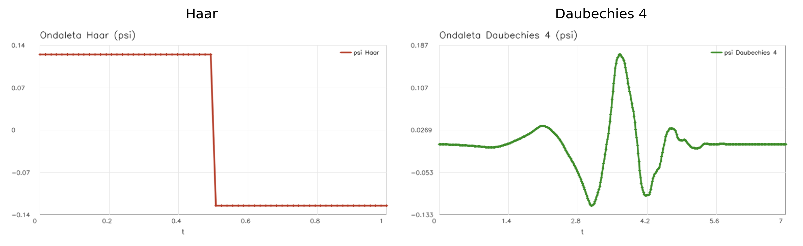
Figura 5.17: Funções da Wavelet (ψ). Note como elas rapidamente decaem para zero (suporte compacto), ao contrário das senoides infinitas de Fourier.
Il diagrama della Figura 5.18 illustra l’analisi multirisoluzione eseguita dalla DWT, in cui la sottobanda di approssimazione (LL) viene successivamente decomposta, formando una rappresentazione gerarchica su due livelli.
Decomposizione Wavelet 2D — Struttura Multirisoluzione (2 livelli)
Figura 5.18: Diagramma della decomposizione wavelet 2D su due livelli.
Il simulatore Figura 5.19 consente di esplorare in modo interattivo la Trasformata Wavelet Discreta 2D (DWT) utilizzando la wavelet di Haar. La decomposizione in sottobande evidenzia la separazione tra la componente di approssimazione e le componenti di dettaglio dell’immagine.
I diversi modelli di ingresso permettono di osservare il comportamento direzionale dei filtri. In immagini con bordi orizzontali e verticali, le sottobande LH e HL evidenziano, rispettivamente, le variazioni verticali e orizzontali dell’intensità. Nelle regioni a variazione graduale, la maggior parte dell’energia si concentra nella sottobanda di approssimazione LL, mentre le sottobande di dettaglio presentano coefficienti prossimi allo zero.
L’analisi multirisoluzione può essere osservata anche aumentando il numero di livelli di decomposizione. In tal caso, solo la sottobanda \(\text{LL}_1\) viene nuovamente decomposta, generando le sottobande \(\text{LL}_2\), \(\text{LH}_2\), \(\text{HL}_2\) e \(\text{HH}_2\), che formano il secondo livello della rappresentazione gerarchica.
In pattern costituiti da regioni omogenee di grande estensione, come una sfumatura graduale o una scacchiera composta da blocchi di grandi dimensioni, l’energia rimane prevalentemente concentrata nella sottobanda LL. Nella sfumatura, ciò avviene perché le differenze tra pixel adiacenti sono piccole. Nella scacchiera, invece, i pixel possiedono praticamente la stessa intensità all’interno di ciascun blocco, cosicché solo i confini tra blocchi producono coefficienti non nulli nelle sottobande di dettaglio. Poiché tali confini occupano solo una piccola frazione dell’immagine, il loro contributo all’energia totale rimane ridotto.
Per rendere possibile l’analisi visiva di queste variazioni sottili, il simulatore incorpora un controllo del guadagno di contrasto dei dettagli (variabile da 1 a 8). Questo parametro funziona come un fattore di amplificazione lineare applicato esclusivamente ai coefficienti delle sottobande di dettaglio (LH, HL e HH) prima della loro visualizzazione a schermo. Negli scenari di transizione graduale (come il gradiente) o di uniformità locale (come l’interno dei blocchi della scacchiera), le differenze numeriche calcolate dal filtro passa-alto di Haar producono coefficienti molto prossimi allo zero, il che renderebbe i quadranti corrispondenti scuri e impercettibili a occhio nudo. Moltiplicando questi valori per il guadagno, il simulatore recupera visivamente le strutture ad alta frequenza nascoste ed enfatizza l’orientamento dei bordi residui.
Il grafico dell’energia per sottobanda quantifica tale distribuzione tra la componente di approssimazione e le componenti di dettaglio, dimostrando che il guadagno visivo non altera la metrica originale dell’energia. Nelle immagini naturali, la maggior parte dell’energia si concentra nella sottobanda LL, mentre le sottobande LH, HL e HH rappresentano principalmente bordi, texture e altre variazioni locali dell’intensità.
🌊 Simulatore: Decomposizione Wavelet 2DTrasformata di Haar
Immagine Originale
Decomposizione Wavelet (Mosaico)
Energia per Sottobanda (%) — Somma Preservata (Parseval)
LL — Approssimazione
Versione attenuata e ridotta dell'immagine
LH — Dettaglio Orizzontale
Evidenzia i bordi orizzontali (variazione verticale)
HL — Dettaglio Verticale
Evidenzia i bordi verticali (variazione orizzontale)
HH — Dettaglio Diagonale
Texture e angoli (variazione in entrambe le direzioni)
Figura 5.19: Simulazione della decomposizione wavelet 2D.
5.6.4 Analisi Multirisoluzione con la DWT 2D
La Trasformata Wavelet Discreta 2D (DWT) decompone un’immagine in componenti di approssimazione e dettaglio, organizzate in modo gerarchico su diverse scale e orientazioni. Poiché le sottobande di dettaglio in immagini naturali spesso presentano coefficienti a basso contrasto, gli esempi pratici che seguono utilizzano un pattern geometrico sintetico generato in Python. Questo approccio replica il comportamento del simulatore della Figura 5.19, rendendo visivamente espliciti gli effetti del filtraggio spaziale e della decomposizione multirisoluzione.
5.6.4.1 Scomposizione a Mosaico su Più Livelli
La Figura 5.20 illustra la struttura gerarchica della DWT su due livelli utilizzando la wavelet di Haar. Il processo si basa sull’applicazione combinata di filtri passa-basso e passa-alto nelle direzioni orizzontale e verticale, seguiti da un sottocampionamento con fattore 2.
Nel primo livello, l’immagine originale genera la sottobanda di approssimazione (\(LL_1\)) e le componenti di dettaglio orizzontale (\(LH_1\)), verticale (\(HL_1\)) e diagonale (\(HH_1\)). Nell’analisi multirisoluzione, la sottobanda \(LL_1\) viene nuovamente filtrata e sottocampionata, producendo il secondo livello di scomposizione (\(LL_2\), \(LH_2\), \(HL_2\) e \(HH_2\)).
Per consentire l’interpretazione visiva delle componenti di dettaglio, il codice estrae il valore assoluto dei loro coefficienti e applica una normalizzazione lineare (min-max) per occupare l’intera gamma dinamica dei toni di grigio [0, 255]. Questa operazione trasforma le regioni omogenee (coefficienti nulli) in nero ed evidenzia in bianco i bordi e le texture estratte a ciascuna scala e orientazione.
%%writefile tmp/fig_05_dwt_subbandas.cpp#define MM_OUT "tmp/fig_05_dwt_subbandas.png"//| label: fig-05-dwt-subbandas//| fig-cap: "Decomposição *wavelet* 2D de 2 níveis com *wavelet* Haar: subbandas LL, LH, HL, HH em cada nível. As subbandas de detalhe revelam estruturas orientadas em diferentes escalas utilizando um padrão sintético."//| echo: true//| output: true#include <opencv2/opencv.hpp>#include <iostream>#include <cmath>#include <vector>#include <string>#include "morph.hpp"// Função para gerar a imagem sintética (mesmo padrão 'combined' do simulador)cv::Mat gerar_imagem_sintetica(int N =256) { cv::Mat img = cv::Mat::zeros(N, N, CV_64F);for (int y =0; y < N; y++) {for (int x =0; x < N; x++) { double v =55+35* (static_cast<double>(x) / N) +15* std::sin(y /24.0);// Quadradoif (24< x && x <100&&24< y && y <100) { v =225; }// Círculo double cx =190, cy =76, r =34;if (std::pow(x - cx, 2) + std::pow(y - cy, 2) < r * r) { v =205; }// Textura periódica (inferior)if (y >164&& y <244) {int p =12; v = (((x / p + y / p) %2) ==0) ? 185 : 65; }// Linha diagonalif (std::abs(x - y) <4) { v =240; } img.at<double>(y, x) = std::max(0.0, std::min(255.0, v)); } } cv::Mat img_uint8; img.convertTo(img_uint8, CV_8U);return img_uint8;}// Normaliza subbanda para visualização [0,255]cv::Mat sb_vis(const cv::Mat& sb) { cv::Mat abs_sb, norm_sb, uint8_sb; cv::absdiff(sb, cv::Scalar(0), abs_sb); cv::normalize(abs_sb, norm_sb, 0, 255, cv::NORM_MINMAX); norm_sb.convertTo(uint8_sb, CV_8U);return uint8_sb;}int main() {// Substitui a imagem escura de moedas pelo padrão sintético claro cv::Mat img_gray = gerar_imagem_sintetica(256); cv::Mat img_float; img_gray.convertTo(img_float, CV_64F);// ── Decomposição wavelet 2 níveis ───────────────────────────────────────────── std::string wavelet ="haar";// Nível 1 mm::Subbands s1 = mm::dwt2(img_float, wavelet); cv::Mat LL1 = s1.LL, LH1 = s1.LH, HL1 = s1.HL, HH1 = s1.HH;// Nível 2 (aplicado sobre LL1) mm::Subbands s2 = mm::dwt2(LL1, wavelet); cv::Mat LL2 = s2.LL, LH2 = s2.LH, HL2 = s2.HL, HH2 = s2.HH; std::cout <<"Forma original : "<< img_gray.rows <<"x"<< img_gray.cols << std::endl; std::cout <<"LL1 (nível 1) : "<< LL1.rows <<"x"<< LL1.cols <<" | LH1/HL1/HH1: "<< LH1.rows <<"x"<< LH1.cols << std::endl; std::cout <<"LL2 (nível 2) : "<< LL2.rows <<"x"<< LL2.cols <<" | LH2/HL2/HH2: "<< LH2.rows <<"x"<< LH2.cols << std::endl; std::vector<mm::Image> imgs_dwt = { mm::Image(img_gray), mm::Image(sb_vis(LL1)), mm::Image(sb_vis(LH1)), mm::Image(sb_vis(HL1)), mm::Image(sb_vis(HH1)), mm::Image(sb_vis(LL2)), mm::Image(sb_vis(LH2)), mm::Image(sb_vis(HL2)), mm::Image(sb_vis(HH2)) }; std::vector<std::string> titles_dwt = {"Original","LL₁ (aprox.)", "LH₁ (horiz.)", "HL₁ (vert.)", "HH₁ (diag.)","LL₂ (aprox.)", "LH₂ (horiz.)", "HL₂ (vert.)", "HH₂ (diag.)" }; mm::show(imgs_dwt, MM_OUT, titles_dwt, 5);return0;}
import os as _os_sent ='tmp/fig_05_dwt_subbandas.png'if _os.path.exists(_sent): mm.show(mm.read("tmp/fig_05_dwt_subbandas.png"), figsize=(16, 7))else:print("figura indisponivel nesta trilha: o programa C++ compilou mas nao gerou "+ _sent +" (ver a versao Python)")
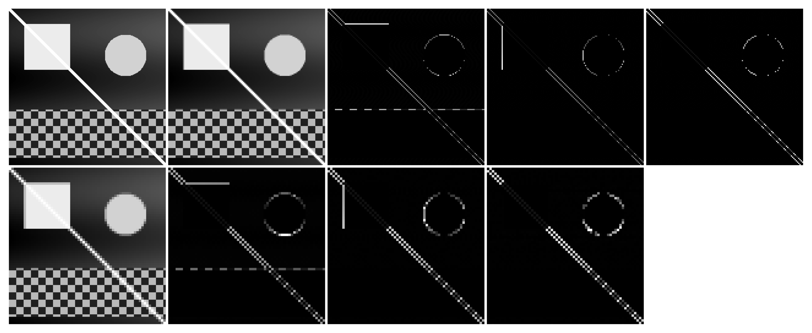
Figura 5.20: Decomposição wavelet 2D de 2 níveis com wavelet Haar: subbandas LL, LH, HL, HH em cada nível. As subbandas de detalhe revelam estruturas orientadas em diferentes escalas utilizando um padrão sintético.
5.6.4.2 Il Compromesso tra Localizzazione e Morbidezza
La scelta della funzione di base (wavelet) influenza direttamente il modo in cui le caratteristiche dell’immagine vengono distribuite e codificate dai coefficienti della DWT. La Figura 5.21 confronta i risultati pratici ottenuti applicando quattro famiglie distinte sul pattern geometrico sintetico: haar, db4, sym4 e bior2.2.
Poiché possiede un supporto corto e una forma a funzione a gradino, la wavelet di Haar produce coefficienti altamente localizzati in corrispondenza delle discontinuità spaziali, generando bordi sottili e nitidi nelle sottobande di dettaglio. Al contrario, famiglie come Daubechies (db4) e Symlets (sym4), che presentano un supporto maggiore (filtri più lunghi) e un numero più elevato di momenti nulli, generano risposte più morbide e distribuite attorno alle transizioni, il che può introdurre lievi oscillazioni o effetti di sfocatura sui confini netti.
Questo comportamento evidenzia il classico compromesso (trade-off) dell’analisi multirisoluzione: supporti più piccoli favoriscono la localizzazione spaziale esatta dei bordi, mentre supporti più ampi e un maggior numero di momenti nulli tendono a produrre rappresentazioni più sparse e morbide. Questa morbidezza e la capacità di attenuazione delle alte frequenze garantiscono una maggiore efficienza nella compattazione dell’energia, caratteristiche fondamentali per applicazioni di compressione dei dati e rimozione del rumore (denoising).
%%writefile tmp/fig_05_dwt_wavelets.cpp#define MM_OUT "tmp/fig_05_dwt_wavelets.png"//| label: fig-05-dwt-wavelets//| fig-cap: "Comparação entre famílias de *wavelets*: Haar, db4, sym4 e bior2.2. Subbanda LL₁ (aproximação) e HH₁ (diagonal) para cada escolha, ilustrando o compromisso entre compactação e suavidade com base no padrão sintético."//| echo: true//| output: true#include <opencv2/opencv.hpp>#include <vector>#include <string>#include <cmath>#include <functional>#include "morph.hpp"#include <iostream>// Função auxiliar para visualizar subbandas (normalizar para 0-255)mm::Image sb_vis(const cv::Mat& sb) { cv::Mat normalized;// Normalizar para visualização double minVal, maxVal; cv::minMaxLoc(sb, &minVal, &maxVal);if (maxVal - minVal >0) { sb.convertTo(normalized, CV_8U, 255.0/ (maxVal - minVal), -minVal *255.0/ (maxVal - minVal)); } else { normalized = cv::Mat::zeros(sb.size(), CV_8U); }return mm::Image(normalized);}// Função para gerar imagem sintética (fallback)cv::Mat gerar_imagem_sintetica(int N =256) { cv::Mat img(N, N, CV_64F);for (int y =0; y < N; y++) {for (int x =0; x < N; x++) { double v =55+35* ((double)x / N) +15* std::sin(y /24.0);if (24< x && x <100&&24< y && y <100) v =225;int cx =190, cy =76, r =34;if ((x - cx) * (x - cx) + (y - cy) * (y - cy) < r * r) v =205;if (y >164&& y <244) {int p =12; v = (((x / p + y / p) %2==0) ? 185 : 65); }if (std::abs(x - y) <4) v =240; v = std::max(0.0, std::min(255.0, v)); img.at<double>(y, x) = v; } } cv::Mat img8u; img.convertTo(img8u, CV_8U);return img8u;}int main() {// Garante que img_gray e img_float utilizem o mesmo padrão sintético claro cv::Mat img_gray;// Fallback: gerar imagem sintética (não temos acesso a variáveis de outros blocos) img_gray = gerar_imagem_sintetica(256); cv::Mat img_float; img_gray.convertTo(img_float, CV_64F); std::vector<std::string> wavelets_comp = {"haar", "db4", "sym4", "bior2.2"}; std::vector<mm::Image> imgs_comp; std::vector<std::string> titles_comp;for (const auto& wname : wavelets_comp) {// pywt.dwt2 -> mm::dwt2 mm::Subbands sub = mm::dwt2(img_float, wname); cv::Mat LL = sub.LL; cv::Mat LH = sub.LH; cv::Mat HL = sub.HL; cv::Mat HH = sub.HH; imgs_comp.push_back(sb_vis(LL)); imgs_comp.push_back(sb_vis(HH)); titles_comp.push_back(wname +" — LL₁"); titles_comp.push_back(wname +" — HH₁"); } mm::show(imgs_comp, MM_OUT, titles_comp, 4);return0;}
import os as _os_sent ='tmp/fig_05_dwt_wavelets.png'if _os.path.exists(_sent): mm.show(mm.read("tmp/fig_05_dwt_wavelets.png"), figsize=(14, 8))else:print("figura indisponivel nesta trilha: o programa C++ compilou mas nao gerou "+ _sent +" (ver a versao Python)")
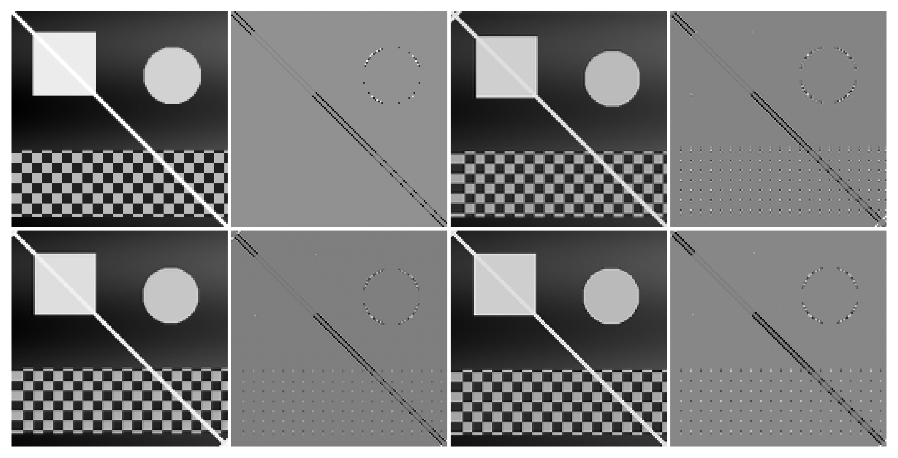
Figura 5.21: Comparação entre famílias de wavelets: Haar, db4, sym4 e bior2.2. Subbanda LL₁ (aproximação) e HH₁ (diagonal) para cada escolha, ilustrando o compromisso entre compactação e suavidade com base no padrão sintético.
5.6.4.3 Limiarizzazione dei Coefficienti e Compressione
Una delle principali applicazioni della Trasformata Wavelet Discreta (DWT) è la compressione dei dati, favorita dalla capacità di rappresentazione sparsa dei coefficienti. La Figura 5.22 illustra l’effetto della limiarizzazione netta (hard thresholding), tecnica in cui i coefficienti di dettaglio con magnitudine inferiore a una soglia \(T\) vengono integralmente azzerati prima del processo di sintesi eseguito dalla Trasformata Wavelet Discreta Inversa (IDWT).
Man mano che la soglia \(T\) viene aumentata, un volume crescente di coefficienti ad alta frequenza viene azzerato. Poiché concentrano meno energia, la rimozione di queste componenti riduce considerevolmente la quantità di informazione necessaria per rappresentare l’immagine, mantenendo intatta la componente di approssimazione globale (la sottobanda \(LL\) più profonda) per preservare la struttura macro. Visivamente, questo scarto di coefficienti si manifesta attraverso la scomparsa progressiva delle trame fini e la levigatura delle transizioni brusche di intensità.
La fedeltà dell’immagine ricostruita rispetto all’originale è quantificata dalla metrica del Picco del Rapporto Segnale-Rumore (PSNR, Peak Signal-to-Noise Ratio), espressa in decibel (dB). Valori più elevati di PSNR indicano una distorsione minore e una maggiore prossimità matematica al segnale originale. L’esperimento pratico evidenzia il decadimento graduale del PSNR all’aumentare dell’aggressività della limiarizzazione, consentendo di valutare numericamente la soglia ottimale per il bilanciamento tra compressione e degrado visivo.
%%writefile tmp/fig_05_dwt_reconstrucao.cpp#define MM_OUT "tmp/fig_05_dwt_reconstrucao.png"// Compile with: g++-std=c++17-O2 snippet.cpp -o snippet $(pkg-config --cflags --libs opencv4) -I/path/to/morph/include#include <opencv2/opencv.hpp>#include <vector>#include <string>#include <cmath>#include <cstdint>#include "morph.hpp"// Helper function to generate synthetic image (same as Python fallback)cv::Mat gerar_imagem_sintetica(int N =256) { cv::Mat img(N, N, CV_64F);for (int y =0; y < N;++y) {for (int x =0; x < N;++x) { double v =55+35* (double(x) / N) +15* std::sin(double(y) /24);if (24< x && x <100&&24< y && y <100) v =225;int cx =190, cy =76, r =34;if ((x - cx) * (x - cx) + (y - cy) * (y - cy) < r * r) v =205;if (y >164&& y <244) {int p =12; v = (((x / p + y / p) %2==0)) ? 185 : 65; }if (std::abs(x - y) <4) v =240; img.at<double>(y, x) = std::max(0.0, std::min(255.0, v)); } } cv::Mat img8; img.convertTo(img8, CV_8U);return img8;}cv::Mat dwt_threshold_reconstruct(const cv::Mat& img, const std::string& wavelet ="db4", int nivel =2, double threshold =0.0) { cv::Mat img64; img.convertTo(img64, CV_64F);// Perform decomposition using mm::wavedec2 mm::WaveDec2 c = mm::wavedec2(img64, wavelet, nivel);// Apply thresholding to detail coefficients mm::WaveDec2 c_t; c_t.LL = c.LL.clone();// LL not thresholded c_t.detail.resize(c.detail.size());for (size_t j =0; j < c.detail.size();++j) { c_t.detail[j].resize(3);for (int k =0; k <3;++k) { c_t.detail[j][k] = mm::wave_threshold(c.detail[j][k], threshold, "hard"); } }// Reconstruct via mm::waverec2 cv::Mat rec = mm::waverec2(c_t, wavelet);// Crop to original dimensions and clip to [0, 255] rec = rec(cv::Rect(0, 0, img.cols, img.rows)).clone(); cv::Mat rec8; rec.convertTo(rec8, CV_8U);return rec8;}int main() {// Ensure img_gray uses the same clear synthetic pattern cv::Mat img_gray = gerar_imagem_sintetica(256); std::vector<int> thresholds = {0, 10, 30, 60, 100}; std::vector<mm::Image> imgs_thr; std::vector<std::string> titles_thr; imgs_thr.push_back(mm::Image(img_gray)); titles_thr.push_back("Original");for (int t : thresholds) { cv::Mat rec = dwt_threshold_reconstruct(img_gray, "db4", 2, double(t)); double psnr = cv::PSNR(img_gray, rec); imgs_thr.push_back(mm::Image(rec)); titles_thr.push_back("T="+ std::to_string(t) +" PSNR="+ std::to_string(psnr).substr(0, std::to_string(psnr).find('.') +2) +" dB"); } mm::show(imgs_thr, MM_OUT, titles_thr, 3);return0;}
[1] Original
[2] T=0 PSNR=361.2 dB
[3] T=10 PSNR=42.4 dB
[4] T=30 PSNR=32.5 dB
[5] T=60 PSNR=28.0 dB
[6] T=100 PSNR=23.1 dB
import os as _os_sent ='tmp/fig_05_dwt_reconstrucao.png'if _os.path.exists(_sent): mm.show(mm.read("tmp/fig_05_dwt_reconstrucao.png"), figsize=(14, 10))else:print("figura indisponivel nesta trilha: o programa C++ compilou mas nao gerou "+ _sent +" (ver a versao Python)")
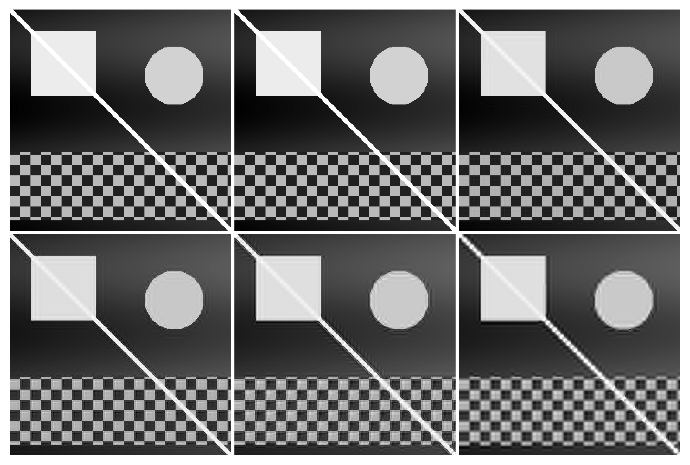
Figura 5.22: Reconstrução wavelet com limiarização de coeficientes (hard thresholding): à medida que o limiar aumenta, mais detalhes são zerados, produzindo imagens progressivamente mais suaves. Métrica PSNR quantifica a perda de qualidade sobre o padrão sintético.
Sintesi — Fourier vs. Wavelet: quando utilizzare ciascun approccio?
La Tabella 5.5 sintetizza le principali differenze strutturali e operative tra la Trasformata Discreta di Fourier (DFT) e la Trasformata Wavelet Discreta (DWT).
Tabella 5.5: Confronto tra la Trasformata Discreta di Fourier (DFT) e la Trasformata Wavelet Discreta (DWT), evidenziandone le principali caratteristiche e applicazioni.
Criterio
Fourier (DFT)
Wavelet (DWT)
Funzioni di base
Sinusoidi di supporto infinito
Funzioni di supporto compatto
Localizzazione spaziale
Non esplicita (globale)
Esplicita (locale)
Filtraggio spettrale
Eccellente per il controllo fine delle frequenze
Basata su sottobande (scale)
Compressione delle immagini
Base della DCT (JPEG tradizionale)
Base della DWT (JPEG 2000)
Analisi multiscala
No
Sì
Rimozione del rumore periodico
Altamente efficiente
Poco indicata
Segnali non stazionari
Limitata
Altamente efficiente
In termini pratici, la DFT si consolida come lo strumento ideale per l’analisi spettrale pura, la progettazione di filtri selettivi nel dominio della frequenza e l’attenuazione di rumori periodici e armonici. D’altro canto, la DWT eccelle in scenari che richiedono la rigorosa preservazione della localizzazione spaziale delle caratteristiche associata al loro contenuto frequenziale, distinguendosi nella compressione dei dati, nell’analisi multirisoluzione e nell’elaborazione di transizioni brusche. Pertanto, entrambe le trasformate devono essere comprese come tecniche perfettamente complementari, che tracciano percorsi distinti e specifici per la risoluzione di problemi nell’ambito dell’elaborazione digitale di immagini e visione artificiale (PDI-VC).
NotaAnalogie con l’Audio: Limitazioni e Precauzioni
Nel tracciare analogie tra l’elaborazione delle immagini e l’audio, è importante considerare le differenze fondamentali:
Nei sistemi audio stereo/multicanale, la fase tra i canali è cruciale per la percezione della localizzazione spaziale (differenze interaurali di fase e di tempo).
Nei sistemi monoaurali, la fase ha un’influenza percettiva limitata — l’orecchio umano è relativamente insensibile alla fase assoluta di componenti sinusoidali isolate.
Nelle immagini, la fase della DFT è sempre fondamentale per la localizzazione spaziale delle strutture, indipendentemente dal fatto che l’immagine sia monocromatica o a colori.
L’analogia tra la fase nell’audio e la fase nelle immagini deve essere utilizzata con cautela, evidenziando che, sebbene entrambe trasportino informazioni sull’organizzazione spaziale/temporale del segnale, i meccanismi percettivi sono fondamentalmente differenti.
5.7 Compressione delle Immagini
Mentre le wavelet stabiliscono il fondamento teorico dello standard JPEG 2000, lo standard JPEG tradizionale si basa sulla Trasformata Discreta dei Coseni (DCT, Discrete Cosine Transform). Nonostante le differenze strutturali, entrambi gli approcci condividono lo stesso principio fondamentale: compattare l’energia dell’immagine in un numero ridotto di coefficienti e scartare le componenti di minore rilevanza con impatto visivo minimo.
L’obiettivo centrale della compressione è ridurre il volume di dati necessario per l’archiviazione o la trasmissione di un’immagine. Tale processo è reso possibile dall’identificazione e dall’eliminazione di ridondanze strutturali e percettive.
5.7.1 Tassonomia delle Ridondanze
Lo sviluppo di algoritmi di compressione si fonda sull’identificazione e sull’eliminazione di tre categorie principali di ridondanza, sintetizzate nella Tabella 5.6.
Tabella 5.6: Categorie di ridondanza nelle immagini digitali e i rispettivi meccanismi di sfruttamento.
Tipo
Definizione
Approccio di Sfruttamento
Spaziale (interpixel)
Elevata correlazione e dipendenza statistica tra pixel adiacenti.
DCT, DWT e codifica predittiva.
Spettrale (intercanale)
Correlazione statistica tra i canali di colore di una stessa immagine.
Trasformazioni dello spazio colore (es: RGB in \(YC_bC_r\)).
Psicovisuale
Insensibilità del sistema visivo umano (SVH) alle variazioni ad alta frequenza e a basso contrasto.
Processi di quantizzazione selettiva dei coefficienti.
A seconda della preservazione dell’informazione originale dopo il processo di decodifica, i metodi di compressione si dividono in due classi fondamentali:
Senza perdita (lossless): Garantisce una ricostruzione bit per bit identica all’immagine originale. Viene impiegata in scenari in cui l’integrità dei dati è strettamente critica, come nelle immagini mediche, nella diagnostica per immagini e nell’archiviazione di documenti testuali.
Con perdita (lossy): Ammette l’introduzione di una distorsione controllata nel segnale in cambio di tassi di compressione sostanzialmente più elevati. È l’approccio standard per le fotografie di consumo e lo streaming video, ecosistemi nei quali il SVH tollera piccole attenuazioni dell’alta frequenza senza percezione di degrado della qualità visiva.
5.7.2 Trasformata del Coseno Discreta (DCT-II 2D)
La Trasformata del Coseno Discreta (DCT) costituisce l’operazione centrale dello standard JPEG. A differenza della DFT, che utilizza una base complessa, la DCT si basa su funzioni trigonometriche puramente reali. Per un blocco immagine \(f(x,y)\) di dimensioni \(N \times N\), la DCT-II 2D mappa il segnale spaziale nel dominio delle frequenze spaziali, generando la matrice dei coefficienti \(C(u,v)\) tramite:
dove i fattori di normalizzazione ortogonale sono dati da \(\alpha(0) = \sqrt{1/N}\) e \(\alpha(k) = \sqrt{2/N}\) per \(k > 0\).
Ogni coefficiente \(C(u,v)\) quantifica il contributo — o “peso” — di una specifica frequenza spaziale all’interno di quel blocco. Il termine \(C(0,0)\) è denominato componente DC e rappresenta l’intensità media del blocco (frequenza nulla). I restanti coefficienti, chiamati componenti AC (Alternating Current), corrispondono a frequenze spaziali progressivamente più elevate.
5.7.3 Le Funzioni di Base della DCT
Da una prospettiva geometrica, la Equazione 5.9 realizza la proiezione del blocco di pixel su un insieme di funzioni ortogonali. Per il caso standard del JPEG (\(N=8\)), il blocco spaziale viene decomposto in una combinazione lineare di 64 funzioni di base bidimensionali, denotate da \(B_{u,v}(x,y)\) e generate dal prodotto di funzioni cosinusoidali:
In questo modo, l’operazione inversa può essere interpretata come la ricostruzione esatta del blocco originale tramite la somma ponderata di queste 64 matrici di base, dove ogni coefficiente \(C(u,v)\) funge da peso analitico della rispettiva componente armonica.
La frequenza spaziale indicata dagli indici \((u,v)\) determina il numero di cicli di oscillazione lungo le dimensioni orizzontali e verticali del blocco. Come illustrato nella Figura 5.23 — il cui codice isola ciascuna base applicando la trasformazione inversa su impulsi unitari —, queste 64 funzioni sono organizzate in una matrice \(8 \times 8\). L’angolo superiore sinistro (\(u=0, v=0\)) mostra il pattern uniforme a frequenza nulla (DC), mentre il progredire verso destra (asse \(u\)) o verso il basso (asse \(v\)) mappa variazioni armoniche progressivamente maggiori, rappresentando transizioni rapide, bordi e trame nelle orientazioni orizzontali, verticali e diagonali.
NotaDCT vs DFT: Vantaggio della Compattazione dell’Energia
Sia la DCT che la DFT mappano un blocco spaziale \(N \times N\) in una matrice di coefficienti della stessa dimensione. Tuttavia, per immagini naturali, la DCT presenta una maggiore efficienza nella compattazione dell’energia alle basse frequenze. Ciò avviene perché la DCT assume implicitamente una simmetria pari del segnale ai bordi del blocco, il che equivale a un’estensione periodica continua, minimizzando l’effetto di dispersione spettrale (ringing). Di conseguenza, la maggior parte dei coefficienti AC decade rapidamente verso valori prossimi allo zero, ottimizzando il pipeline di compressione senza introdurre una degradazione visiva percepibile.
%%writefile tmp/fig_05_dct_basis.cpp#define MM_OUT "tmp/fig_05_dct_basis.png"//| label: fig-05-dct-basis//| fig-cap: "O Alfabeto Visual do JPEG: As 64 funções de base da DCT-II. O coeficiente DC fica no topo esquerdo (suave). Ao descer e avançar à direita, a oscilação espacial aumenta drasticamente."//| echo: true//| output: true#include <opencv2/opencv.hpp>#include <vector>#include <string>#include "morph.hpp"#include <filesystem>int main() {// Cada base é a IDCT de um único coeficiente unitário — montadas num mosaico 8×8. const int tile =32; cv::Mat montagem(8* tile, 8* tile, CV_8UC1);for (int i =0; i <8; i++) {for (int j =0; j <8; j++) { cv::Mat coef = cv::Mat::zeros(8, 8, CV_64F); coef.at<double>(i, j) =1.0; cv::Mat base = mm::idct2(coef); base = mm::idct2(coef); cv::normalize(base, base, 0, 255, cv::NORM_MINMAX, CV_8U); cv::Mat base_resized; cv::resize(base, base_resized, cv::Size(tile, tile), 0, 0, cv::INTER_NEAREST); base_resized.copyTo(montagem(cv::Rect(j * tile, i * tile, tile, tile))); } } mm::Image montagem_img = montagem; std::vector<mm::Image> images = {montagem_img}; std::vector<std::string> titles = {"As 64 bases da DCT-II 8×8 (DC no topo-esquerdo)"}; mm::show(images, MM_OUT, titles, 1);// [pdi:panel-io] auto-generated — do not edit by handstd::filesystem::create_directories("tmp");mm::write(montagem, "tmp/fig_05_dct_basis_0.png");// [pdi:panel-io:end]return0;}
[1] As 64 bases da DCT-II 8×8 (DC no topo-esquerdo)
import os as _os_sent ='tmp/fig_05_dct_basis_0.png'if _os.path.exists(_sent): mm.show( [ mm.read("tmp/fig_05_dct_basis_0.png"), ], titles=['As 64 bases da DCT-II 8×8 (DC no topo-esquerdo)', ], cols=1, )else:print("figura indisponivel nesta trilha: o programa C++ compilou mas nao gerou "+ _sent +" (ver a versao Python)")
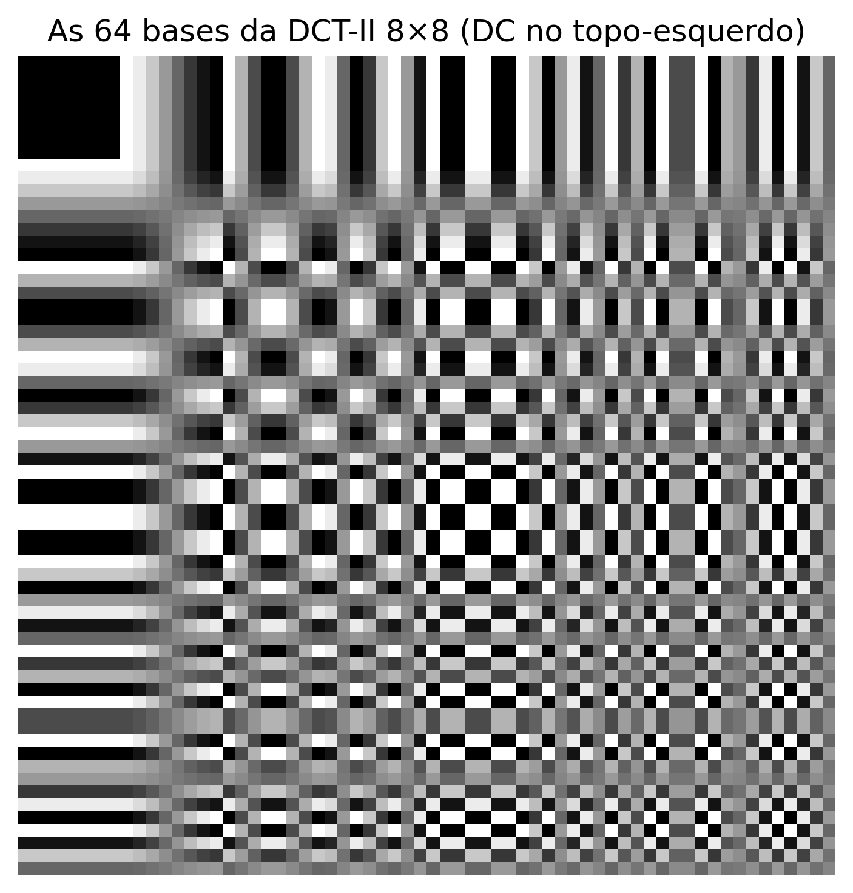
Figura 5.23: O Alfabeto Visual do JPEG: As 64 funções de base da DCT-II. O coeficiente DC fica no topo esquerdo (suave). Ao descer e avançar à direita, a oscilação espacial aumenta drasticamente.
5.7.4 Concentrazione di Energia e Ricostruzione Progressiva
Prima dell’applicazione della DCT, i pixel del blocco di intensità vengono di routine traslati (sottraendo \(128\) per immagini a 8 bit) al fine di centrare il segnale attorno allo zero, eliminando componenti continue superflue. Calcolando la DCT sul blocco risultante, la proprietà di compattazione dell’energia diventa evidente: la quasi totalità della varianza e dell’informazione dell’immagine originale si concentra nel coefficiente DC (\(C(0,0)\)) e nei primi armonici AC a bassa frequenza.
La Figura 5.24 dimostra questo fenomeno mediante una ricostruzione progressiva per troncamento brusco. Invece di utilizzare tutti i 64 coefficienti, l’algoritmo conserva solo i primi \(k\) componenti — selezionati in base a una scansione che privilegia le basse frequenze spaziali — e azzera i rimanenti.
La sintesi inversa (IDCT) eseguita con solo una frazione dei coefficienti (come il 15% o il 30%) è già in grado di recuperare le strutture e l’illuminazione macro del blocco originale di pixel. Man mano che gli armonici a frequenze più elevate vengono progressivamente reintegrati, i dettagli fini e le transizioni rapide vengono ripristinati. Questo comportamento valida il principio della compressione percettiva: le alte frequenze scartate possiedono poca energia e la loro assenza, in condizioni normali, genera un impatto visivo secondario sulla percezione dell’osservatore.
Coefficienti DCT del blocco 8×8:
192 -48 1 8 0 -1 0 0
-96 54 7 -10 0 0 0 0
14 -14 8 0 0 0 0 0
0 0 -11 1 0 0 0 0
9 -11 0 0 1 0 1 0
0 0 0 0 0 0 0 0
0 0 0 0 -1 0 0 0
0 0 0 0 0 0 0 0
Energia DC : 36816.0
Energia totale : 52253.0
Frazione nel DC: 70.5% ← concentrazione di energia
[1] Blocco originale
(8×8 pixel)
[2] 1 coef.
(2% del totale)
[3] 4 coef.
(6% del totale)
[4] 10 coef.
(16% del totale)
[5] 20 coef.
(31% del totale)
[6] 40 coef.
(62% del totale)
[7] 64 coef.
(100% del totale)
import os as _os_sent ='tmp/fig_05_dct_bloco.png'if _os.path.exists(_sent): mm.show(mm.read("tmp/fig_05_dct_bloco.png"), figsize=(12, 7))else:print("figura indisponivel nesta trilha: o programa C++ compilou mas nao gerou "+ _sent +" (ver a versao Python)")
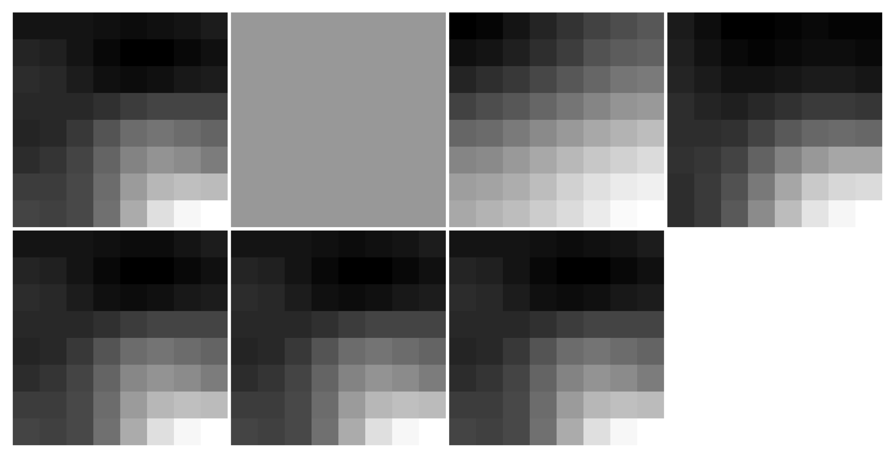
Figura 5.24: DCT 2D em bloco 8×8: coeficientes e reconstrução progressiva.
5.7.5 Il Pipeline di Compressione JPEG
Lo standard JPEG opera dividendo l’immagine in blocchi disgiunti di \(8 \times 8\) pixel, elaborati tramite una sequenza di trasformazioni spaziali, percettive e statistiche. Il pipeline completo di codifica è strutturato in sei fasi principali:
La Tabella 5.7 dettaglia la funzione analitica e il fondamento percettivo che giustifica ciascuna di queste fasi.
Tabella 5.7: Fasi del pipeline di compressione JPEG e i rispettivi fondamenti di progetto.
Fase
Operazione
Fondamento Percettivo e Statistico
1
Conversione \(RGB \rightarrow YC_bC_r\)
Separa la luminanza (\(Y\)) dalla crominanza (\(C_b, C_r\)). Il sistema visivo umano (SVH) presenta maggiore sensibilità alle variazioni di luminosità che di colore.
2
Sottocampionamento della crominanza (es: 4:2:0)
Riduce la risoluzione spaziale dei canali colore della metà, scartando dati ridondanti con impatto visivo trascurabile.
3–4
Centratura e applicazione della DCT \(8 \times 8\)
Trasla i pixel nell’intervallo \([-128, 127]\) e compatta l’energia spettrale del blocco nei coefficienti a bassa frequenza.
5
Quantizzazione lineare selettiva
Divide ciascun coefficiente \(C(u,v)\) per l’elemento corrispondente della matrice \(Q(u,v)\), applicando un arrotondamento a interi. Costituisce la principale fonte di compressione con perdita.
6
Scansione a zig-zag e codifica
Ordina i coefficienti quantizzati per massimizzare le sequenze nulle consecutive, ottimizzando la codifica a lunghezza di corsa (RLE) e la codifica di Huffman.
La matrice di quantizzazione\(Q(u,v)\) è il meccanismo centrale di controllo del compromesso tra tasso di compressione e qualità visiva. Nell’algoritmo pratico della Figura 5.25, il fattore di qualità stabilito dall’utente (scala da 1 a 100) viene convertito in uno scalare che parametrizza la severità della matrice \(Q\). Valori ridotti di qualità espandono i divisori di \(Q(u,v)\), forzando il troncamento di massa dei coefficienti AC a zero. Quando questa eliminazione è eccessiva, la discontinuità ai confini dei blocchi adiacenti non viene attenuata nella ricostruzione, generando i cosiddetti artefatti a blocchi (blocking artifacts).
La Logica della Scansione a Zig-Zag
L’efficienza del codificatore entropico successivo alla quantizzazione dipende direttamente dall’ordinamento dei dati. Poiché la DCT concentra l’energia vitale nel vertice superiore sinistro della matrice (basse frequenze) e spinge i coefficienti nulli verso le estremità opposte, la lettura lineare per righe o colonne frammenterebbe le sequenze di zeri.
L’ordinamento a zig-zag risolve questa limitazione percorrendo la matrice diagonalmente in ordine crescente di frequenza spaziale. Questa mappatura raggruppa i coefficienti significativi all’inizio del vettore e concentra i coefficienti nulli in un’unica sequenza continua alla fine dell’arrangiamento, consentendo all’algoritmo RLE di codificare grandi blocchi di dati in modo compatto ed efficiente.
NotaCos’è l’RLE?
RLE (Run-Length Encoding) è una tecnica di compressione senza perdita che codifica sequenze consecutive di valori identici — specialmente zeri — come una coppia (conteggio, valore). Nel JPEG, dopo la scansione a zig-zag, i coefficienti quantizzati sono organizzati in modo che gli zeri si concentrino alla fine del vettore. L’RLE comprime quindi questa lunga corsa di zeri con estrema efficienza, ottimizzando l’archiviazione e la trasmissione dell’immagine compressa.
%%writefile tmp/fig_05_jpeg_pipeline.cpp#define MM_OUT "tmp/fig_05_jpeg_pipeline.png"//| label: fig-05-jpeg-pipeline//| fig-cap: "*Pipeline* JPEG simplificado aplicado à imagem clássica do *Cameraman*: DCT em blocos 8×8, quantização com diferentes fatores de qualidade e reconstrução via IDCT. Os artefatos de bloco (*blocking artifacts*) tornam-se visualmente evidentes em fatores de qualidade reduzidos ($Q=10$ e $Q=25$)."//| echo: true//| output: true#include <opencv2/opencv.hpp>#include <vector>#include <string>#include <cstdio>#include "morph.hpp"int main() {// Pipeline JPEG (DCT 8x8-> quantizacao -> IDCT) via mm.jpegCompress,// na imagem classica do Cameraman (asset do capitulo) reduzida a 256x256. cv::Mat img_src_full = cv::imread("imagens/cameraman.png", cv::IMREAD_GRAYSCALE); cv::Mat img_src_resized; cv::resize(img_src_full, img_src_resized, cv::Size(256, 256)); mm::Image img_src = mm::gray(img_src_resized); std::vector<mm::Image> imgs; std::vector<std::string> titles; imgs.push_back(img_src); titles.push_back("Original (Cameraman)");int qs[] = {10, 25, 50, 75, 90};for (int q : qs) { mm::Image rec = mm::jpegCompress(img_src, q); imgs.push_back(rec); char title[100]; double psnr_val = mm::psnr(img_src, rec); std::snprintf(title, sizeof(title), "Q=%d (PSNR=%.1f dB)", q, psnr_val); titles.push_back(title); } mm::show(imgs, MM_OUT, titles, 3);return0;}
import os as _os_sent ='tmp/fig_05_jpeg_pipeline.png'if _os.path.exists(_sent): mm.show(mm.read("tmp/fig_05_jpeg_pipeline.png"), figsize=(14, 10))else:print("figura indisponivel nesta trilha: o programa C++ compilou mas nao gerou "+ _sent +" (ver a versao Python)")
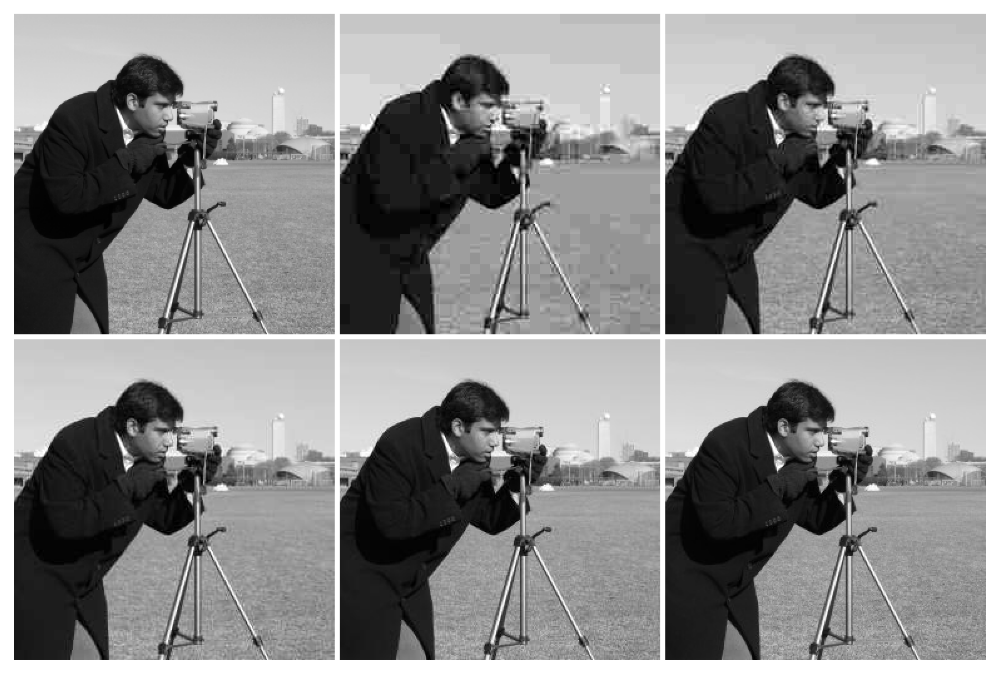
Figura 5.25: Pipeline JPEG simplificado aplicado à imagem clássica do Cameraman: DCT em blocos 8×8, quantização com diferentes fatores de qualidade e reconstrução via IDCT. Os artefatos de bloco (blocking artifacts) tornam-se visualmente evidentes em fatores de qualidade reduzidos (\(Q=10\) e \(Q=25\)).
5.7.6 Simulatore Interattivo: Quantizzazione DCT
Il simulatore della Figura 5.26 consente di esplorare l’impatto del processo di quantizzazione su un blocco \(8 \times 8\) estratto da un’immagine reale, sintetizzando in tempo reale le seguenti componenti:
Blocco originale e ricostruito: Rappresentazione diretta dei pixel nel dominio spaziale in scala di grigi [0, 255].
Coefficienti DCT: Distribuzione dell’energia mappata in modo logaritmico su un gradiente cromatico, evidenziando la concentrazione di intensità nel vertice superiore sinistro (basse frequenze).
Coefficienti quantizzati: Visualizzazione dei valori interi risultanti dalla divisione per la matrice \(Q(u,v)\), rendendo visivamente esplicita l’emergenza in massa di coefficienti nulli (in toni scuri) al diminuire del fattore di qualità.
Metriche di compressione: Pannello di monitoraggio che quantifica l’Errore Quadratico Medio (MSE), il numero di coefficienti preservati e il volume di zeri generati per la codifica entropica.
Figura 5.26: Simulatore interattivo di compressione DCT-JPEG: regola il fattore di qualità e visualizza in tempo reale i coefficienti azzerati, il blocco ricostruito e l’errore di quantizzazione.
5.8 Confronto dei Formati Immagine
La scelta di un formato di memorizzazione digitale incide direttamente sul compromesso tra qualità visiva, dimensione del file e costo computazionale della decodifica. I tre formati di maggiore rilevanza per architetture web e sistemi di calcolo visivo sono JPEG, PNG e WebP.
5.8.1 Caratteristiche dei Formati
La Tabella 5.8 sintetizza le proprietà strutturali dei principali formati di immagine rasterizzati.
Tabella 5.8: Confronto strutturale tra i principali formati di immagine rasterizzati.
Caratteristica
JPEG
PNG
WebP
Compressione
Con perdita
Senza perdita
Con e senza perdita.
Trasparenza (canale alfa)
No
Sì
Sì.
Supporto animazioni
No
Limitato (APNG)
Sì.
Algoritmo di base
DCT + Huffman
DEFLATE (LZ77 + Huffman)
VP8 / VP8L.
Ideale per
Fotografia
Grafica, testo e icone
Uso universale in ambiente Web.
Inadeguato per
Testo e bordi netti
Immagini fotografiche complesse
Compatibilità legacy.
5.8.2 Metriche di Valutazione della Qualità
Due metriche oggettive sono ampiamente adottate per quantificare la distorsione introdotta dai processi di compressione:
dove \(L = 255\) per immagini quantizzate a 8 bit e \(\text{MSE}\) rappresenta l’Errore Quadratico Medio (Mean Squared Error). Valori di PSNR superiori a 40 dB indicano fedeltà eccellente; tra 30 dB e 40 dB rappresentano buona qualità; valori inferiori a 30 dB corrispondono a degradazioni visive facilmente percepibili.
Lo SSIM valuta finestre locali dell’immagine basandosi su tre componenti complementari: luminanza (\(\mu_f, \mu_g\)), contrasto (\(\sigma_f, \sigma_g\)) e struttura (\(\sigma_{fg}\)), ponderate da costanti di stabilità \(c_1\) e \(c_2\). L’indice varia nell’intervallo \([-1, 1]\), dove l’unità rappresenta l’identità perfetta. A differenza del PSNR, lo SSIM considera l’organizzazione spaziale degli errori, allineandosi alla percezione del sistema visivo umano (SVH).
NotaPSNR vs SSIM: Applicazione di Metriche Percettive
Il PSNR possiede una formulazione matematica semplice e un basso costo computazionale; tuttavia tende a sovrastimare la qualità in immagini con distorsioni localizzate o a sottostimarla in variazioni globali di luminosità tollerate dall’osservatore. Lo SSIM modella con maggiore fedeltà la percezione biologica, ma richiede un maggiore sforzo di elaborazione. Per analisi rigorose dei codec, si raccomanda di riportare entrambe le metriche statistiche in carattere complementare.
5.8.3 Ispezione Visiva: Natura degli Artefatti di Compressione
La natura matematica del codificatore determina il tipo di degrado introdotto a bitrate ridotti. Come illustrato nella Figura 5.27, la compressione aggressiva tramite DCT nello standard JPEG segmenta l’immagine in griglie rigide, generando gli artefatti a blocchi (blocking artifacts). Al contrario, gli algoritmi basati su codifica predittiva o rappresentazioni sottoposte a trasformate spaziali avanzate (come WebP e JPEG 2000) eliminano le discontinuità di blocco, ma introducono perdita di texture fine e sfocature caratteristiche attorno ai bordi ad alto contrasto.
%%writefile tmp/fig_05_zoom_artefatos.cpp#define MM_OUT "tmp/fig_05_zoom_artefatos.png"//| label: fig-05-zoom-artefatos//| fig-cap: "Análise comparativa de artefatos de compressão sob fator de qualidade reduzido ($Q=10$). À esquerda, observa-se o artefato de bloco característico da discretização por DCT no JPEG. À direita, evidencia-se o efeito de atenuação e suavização de bordas intrínseco ao padrão WebP."//| echo: true//| output: true#include <opencv2/opencv.hpp>#include <vector>#include <string>#include <filesystem>#include "morph.hpp"// Função de zoom com interpolação NEARESTcv::Mat zoom(const cv::Mat& img) { cv::Mat roi = img(cv::Rect(150, 120, 80, 80));// img[120:200, 150:230] cv::Mat resized; cv::resize(roi, resized, cv::Size(320, 320), 0, 0, cv::INTER_NEAREST);return resized;}int main() {// Cria diretório temporário se não existir std::filesystem::create_directories("tmp");// Lê e redimensiona a imagem original cv::Mat img_src_full = cv::imread("imagens/cameraman.png", cv::IMREAD_GRAYSCALE); cv::Mat img_src_resized; cv::resize(img_src_full, img_src_resized, cv::Size(256, 256)); mm::Image img_src = img_src_resized;// Converte para mm::Image// Salva versões comprimidas cv::Mat img_src_mat = img_src;// Converte de volta para cv::Mat cv::imwrite("tmp/zoom_q10.jpg", img_src_mat, {cv::IMWRITE_JPEG_QUALITY, 10}); cv::imwrite("tmp/zoom_q10.webp", img_src_mat, {cv::IMWRITE_WEBP_QUALITY, 10});// Aplica zoom em cada versão cv::Mat z_orig = zoom(img_src_mat); cv::Mat z_jpeg = zoom(cv::imread("tmp/zoom_q10.jpg", cv::IMREAD_GRAYSCALE)); cv::Mat z_webp = zoom(cv::imread("tmp/zoom_q10.webp", cv::IMREAD_GRAYSCALE));// Mostra os resultados mm::show( {z_orig, z_jpeg, z_webp}, MM_OUT, {"Zoom Original", "JPEG Q=10 (Artefato de Bloco)", "WebP Q=10 (Suavizacao)"},3 );// [pdi:panel-io] auto-generated — do not edit by handstd::filesystem::create_directories("tmp");mm::write(z_orig, "tmp/fig_05_zoom_artefatos_0.png");mm::write(z_jpeg, "tmp/fig_05_zoom_artefatos_1.png");mm::write(z_webp, "tmp/fig_05_zoom_artefatos_2.png");// [pdi:panel-io:end]return0;}
[1] Zoom Original
[2] JPEG Q=10 (Artefato de Bloco)
[3] WebP Q=10 (Suavizacao)
import os as _os_sent ='tmp/fig_05_zoom_artefatos_0.png'if _os.path.exists(_sent): mm.show( [ mm.read("tmp/fig_05_zoom_artefatos_0.png"), mm.read("tmp/fig_05_zoom_artefatos_1.png"), mm.read("tmp/fig_05_zoom_artefatos_2.png"), ], titles=['Zoom Original','JPEG Q=10 (Artefato de Bloco)','WebP Q=10 (Suavizacao)', ], cols=3, figsize=(14, 5), )else:print("figura indisponivel nesta trilha: o programa C++ compilou mas nao gerou "+ _sent +" (ver a versao Python)")
Figura 5.27: Análise comparativa de artefatos de compressão sob fator de qualidade reduzido (\(Q=10\)). À esquerda, observa-se o artefato de bloco característico da discretização por DCT no JPEG. À direita, evidencia-se o efeito de atenuação e suavização de bordas intrínseco ao padrão WebP.
5.8.4 Valutazione Quantitativa e Spaziale della Compressione
La validazione degli algoritmi di compressione con perdita richiede un’analisi che correli il costo di archiviazione alla fedeltà del segnale ricostruito. Tale valutazione viene condotta in modo complementare attraverso curve di prestazione globale e mediante la mappatura locale delle distorsioni indotte dai codificatori.
5.8.4.1 Curve di Rateo-Distorsione
La Figura 5.28 presenta la valutazione empirica del pipeline JPEG e WebP tramite curve di rateo-distorsione, che monitorano il guadagno di compressione (dimensione del file in KB) in funzione del PSNR. Il formato PNG funge da linea di base ideale (\(\text{PSNR} = \infty\)), poiché la sua natura lossless impedisce qualsiasi degradazione, sebbene richieda un volume di dati notevolmente maggiore.
L’analisi delle curve dimostra la superiorità e l’efficienza dello standard WebP rispetto al JPEG tradizionale: per raggiungere lo stesso livello di fedeltà matematica (come la fascia di qualità eccellente, dove \(\text{PSNR} > 40\text{ dB}\)), il codificatore WebP genera file significativamente più piccoli. Questo comportamento riflette l’impatto pratico dell’evoluzione degli algoritmi nell’ottimizzazione dei sistemi di trasmissione e archiviazione digitale.
Figura 5.28: Curva distorsione-tasso: PSNR vs dimensione del file per JPEG, WebP e PNG applicata all’immagine del Cameraman.
NotaDimensione originale dell’immagine
L’immagine Cameraman (\(256 \times 256\) pixel in scala di grigi) occupa 64 KB in formato grezzo (senza compressione). Come riferimento, il PNG lossless comprime questo volume a 36,2 KB — evidenziando che la compressione senza perdita riduce già significativamente lo spazio di archiviazione per immagini con regioni omogenee. In contrapposizione, i formati con perdita (JPEG e WebP) raggiungono dimensioni ancora minori: il JPEG con qualità 95 occupa 22,3 KB (PSNR ≈ 45 dB), mentre il WebP con qualità 90 raggiunge 12,5 KB con PSNR equivalente, dimostrando la sua superiorità in efficienza di compressione.
5.8.4.2 Mappatura Spaziale degli Errori e Correlazione Percettiva
Sebbene il PSNR offra un indicatore numerico rapido, le metriche globali non riescono a distinguere come la perdita di informazione si distribuisca geometricamente sull’immagine. La Figura 5.29 risolve questa limitazione associando le ricostruzioni a diverse qualità ai rispettivi mappe di errore assoluto e all’SSIM.
Le mappe residue — ottenute dalla differenza assoluta normalizzata tra l’immagine originale e quella compressa — rivelano la firma spaziale intrinseca di ciascuna architettura di codifica:
Ad alte qualità (\(Q=95\) a \(Q=75\)): Le distorsioni si concentrano prevalentemente attorno a transizioni brusche di intensità (bordi), a causa del ripiegamento spettrale derivante dallo scarto delle alte frequenze. L’indice SSIM rimane prossimo all’unità, attestando l’integrità delle strutture originali.
A qualità aggressive (\(Q=50\) a \(Q=25\)): L’errore assume una struttura a maglia ortogonale regolarizzata. Questo pattern geometrico evidenzia l’emergere degli artefatti a blocchi (blocking artifacts), indicando che la quantizzazione severa ha corrotto la correlazione spaziale tra blocchi adiacenti di \(8 \times 8\) pixel.
L’SSIM cattura questa degradazione morfologica in modo molto più sensibile rispetto al PSNR, penalizzando il punteggio finale man mano che l’organizzazione strutturale e le trame fini — alle quali il sistema visivo umano è altamente reattivo — vengono eliminate dal codificatore.
[1] Originale
[2] Q=25 (PSNR=30.7dB | SSIM=0.860)
[3] Mappa di errore (Q=25) - bordi e blocco
[4] Q=50 (PSNR=32.8dB | SSIM=0.905)
[5] Mappa di errore (Q=50) - bordi e blocco
[6] Q=75 (PSNR=35.2dB | SSIM=0.938)
[7] Mappa di errore (Q=75) - bordi e blocco
[8] Q=95 (PSNR=44.8dB | SSIM=0.990)
[9] Mappa di errore (Q=95) - bordi e blocco
import os as _os_sent ='tmp/fig_05_ssim_artefatos.png'if _os.path.exists(_sent): mm.show(mm.read("tmp/fig_05_ssim_artefatos.png"), figsize=(14, 14))else:print("figura indisponivel nesta trilha: o programa C++ compilou mas nao gerou "+ _sent +" (ver a versao Python)")
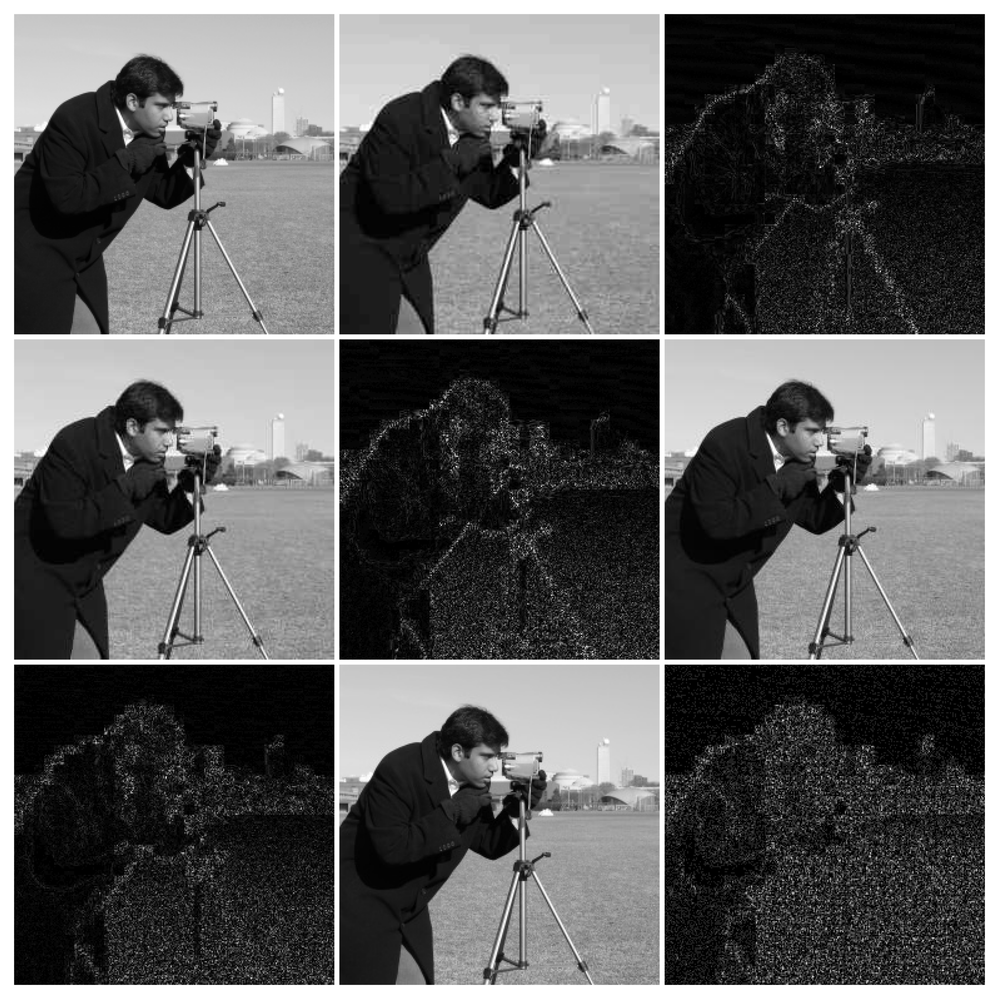
Figura 5.29: Análise espacial de degradação: imagens reconstruídas e respectivos mapas de erro absoluto normalizados para diferentes fatores de qualidade JPEG.
NotaInterpretando le mappe di errore
Le mappe di errore presentate sono state normalizzate singolarmente (cv2.NORM_MINMAX) per massimizzare il contrasto visivo e rivelare la struttura spaziale delle distorsioni. Ciò significa che:
In Q=95, l’errore assoluto è dell’ordine di 0.5–1.5 livelli di grigio (impercettibile visivamente), ma la normalizzazione lo amplifica in bianco e nero per evidenziarne la localizzazione su bordi e transizioni.
In Q=25, l’errore assoluto è 10–20 volte maggiore (5–15 livelli di grigio), ma la normalizzazione lo porta anch’esso allo stesso intervallo [0, 255].
Pertanto, l’intensità del bianco nelle mappe NON è confrontabile tra diverse qualità — le mappe servono solo a rivelare la firma spaziale dell’errore (bordi vs blocchi), non la sua ampiezza. L’ampiezza corretta è fornita dai valori di PSNR e SSIM, che mostrano chiaramente che Q=95 ha un errore molto minore rispetto a Q=25.
Sintesi — Compressione JPEG
Il processo di compressione nello standard JPEG si basa sull’applicazione combinata di trasformazioni spaziali, percettive e statistiche per ridurre le ridondanze di un’immagine. La Tabella 5.9 riassume il ruolo di ciascuna fase nel pipeline e il rispettivo impatto sulla riduzione dei dati.
Tabella 5.9: Sintesi delle fasi del pipeline di compressione JPEG e dei rispettivi impatti.
Fase
Operazione Analitica
Meccanismo di Guadagno / Compressione
Conversione \(YC_bC_r\)
Isolamento dei canali di luminanza e crominanza.
Modella la percezione del SVH, consentendo di trattare colore e luminosità in modo indipendente.
Sottocampionamento 4:2:0
Riduzione della risoluzione spaziale dei canali di colore (\(C_b\) e \(C_r\)).
Elimina circa il 50% dei dati grezzi con un impatto visivo minimo.
DCT \(8 \times 8\)
Mappatura dal dominio spaziale al dominio delle frequenze spaziali.
Compattazione dell’energia, concentrando l’informazione vitale nei primi coefficienti.
Quantizzazione Lineare
Divisione intera dei coefficienti per una matrice di ponderazione \(Q(u,v)\).
Principale fonte di compressione con perdita; elimina le alte frequenze impercettibili.
Codifica Entropica
Applicazione di algoritmi RLE e codifica di Huffman.
Compressione statistica senza perdita, ottimizzata dalle lunghe sequenze di coefficienti nulli.
Artefatti di Degradazione Caratteristici
L’applicazione di tassi di compressione eccessivamente aggressivi (fattori di qualità ridotti) introduce distorsioni prevedibili nell’immagine ricostruita, derivanti dalle limitazioni matematiche del modello:
Artefatti a blocchi (blocking artifacts): Discontinuità geometriche visibili ai confini dei blocchi di \(8 \times 8\) pixel, causate dalla perdita di correlazione spaziale dopo la quantizzazione severa delle componenti AC.
Effetto di alone (ringing): Oscillazioni fantasma o distorsioni “a fumo” attorno ai bordi netti e ad alto contrasto, provocate dall’eliminazione brusca delle armoniche ad alta frequenza necessarie per ricostruire funzioni a gradino.
Perdita di texture fine: Attenuazione dei dettagli ad alta frequenza e a basso contrasto (come prati, tessuti o porosità), rendendo le regioni originariamente strutturate eccessivamente lisce o omogenee.
5.9 Applicazione Pratica: Rimozione del Rumore mediante Filtraggio Ibrido
Integrando le tecniche consolidate nel corso di questo capitolo, si presenta un pipeline completo di restauro delle immagini che combina l’analisi spettrale nel dominio della frequenza con il filtraggio adattivo nel dominio spaziale. L’obiettivo è attenuare un rumore misto (composto da degradazione gaussiana e interferenza periodica) preservando al massimo i dettagli strutturali dell’immagine originale.
La coppia di metriche statistiche PSNR e SSIM fornisce una valutazione qualitativa e morfologica complementare del processo di restauro:
PSNR: Penalizza uniformemente lo scarto quadratico medio pixel per pixel.
SSIM: Valuta la preservazione di strutture locali percettivamente rilevanti (luminanza, contrasto e contorni).
Nella pratica, esiste un compromesso analitico (trade-off) tra riduzione del rumore e preservazione dei dettagli: filtri spaziali eccessivamente aggressivi attenuano bene il rumore ad alta frequenza, ma degradano trame fini e smussano bordi netti — il che riduce simultaneamente sia il PSNR che lo SSIM rispetto all’immagine originale. La sfida nella progettazione dei filtri è trovare il punto di equilibrio che massimizzi entrambe le metriche, garantendo un restauro fedele e visivamente gradevole.
5.9.1 Analisi delle Prestazioni e Conclusione del Capitolo
I risultati numerici e visivi generati dalla Figura 5.30 dimostrano la rilevanza pratica di associare diversi domini di elaborazione. L’inserimento simultaneo di rumore periodico e stocastico corrompe le proprietà morfologiche del segnale, riducendo severamente gli indici di similarità e il rapporto segnale-rumore dell’immagine di riferimento.
L’isolamento e la soppressione dei picchi armonici nel dominio della frequenza tramite la maschera notch rimuovono le frange di interferenza sinusoidali sparse nello spazio bidimensionale. Come evidenziato nei dati stampati della Figura 5.30, questa filtrazione chirurgica promuove un salto immediato e sostanziale nella metrica PSNR. Tuttavia, il rumore gaussiano ad alta frequenza rimane attivo in modo omogeneo nello spettro, richiedendo un approccio complementare.
Il restauro finale è consolidato nel dominio spaziale con l’introduzione del filtro bilaterale. Diversamente dagli operatori passa-basso convenzionali (come quello gaussiano o di media), che smusserebbero indiscriminatamente rumore e contorni strutturali, la filtrazione bilaterale calcola pesi ponderati in base alla prossimità geometrica e alla differenza di intensità radiometrica. Questo comportamento adattivo attenua le fluttuazioni stocastiche residue nelle regioni di transizione graduale e preserva la nitidezza dei bordi spaziali.
La convergenza di entrambi gli approcci risulta in un miglioramento sostanziale e simultaneo di PSNR e SSIM rispetto all’immagine rumorosa — sebbene i valori finali rimangano inferiori a quelli dell’immagine originale (PSNR = \(\infty\), SSIM = 1,0), a causa della perdita inevitabile di informazioni spettrali e testurali durante i processi di filtrazione. L’attenuazione graduale (gaussiana) dei picchi nello spettro evita artefatti di ringing, mentre il filtro bilaterale elimina il rumore stocastico residuo senza compromettere la nitidezza dei bordi. I risultati confermano l’efficacia e la complementarità pratica degli strumenti di analisi di frequenza presentati in questo capitolo, dimostrando che la filtrazione ibrida (frequenza + spaziale) è superiore a qualsiasi approccio isolato per il restauro di immagini degradate da rumore misto.
Rumorosa: PSNR=20.19 dB | Dopo notch: 22.40 dB | Notch+bilaterale: 23.61 dB
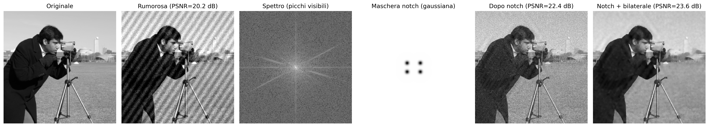
Figura 5.30: Pipeline completo di rimozione del rumore misto: (1) aggiunta di rumore gaussiano e periodico; (2) identificazione dei picchi di interferenza nello spettro delle frequenze; (3) applicazione di maschera notch con attenuazione gaussiana morbida; (4) post-elaborazione tramite filtro bilaterale per l’eliminazione del rumore stocastico residuo.
5.10 Riepilogo del Capitolo
La transizione dal dominio spaziale al dominio delle frequenze rivela la distribuzione spettrale dell’energia dell’immagine, stabilendo la base analitica per il filtraggio avanzato, il restauro e la compressione dei dati. L’articolazione strutturale di questi concetti è sintetizzata nella mappa concettuale della Figura 5.31.
Figura 5.31: Mappa concettuale delle trasformazioni e delle proprietà nel dominio delle frequenze.
Fondamenti Essenziali
DFT e Percezione Visiva: Lo spettro scompone l’immagine in componenti armoniche. La fase mantiene l’intelligibilità geometrica della scena e la localizzazione dei contorni, mentre la magnitudine determina la distribuzione del contrasto e delle ampiezze globali.
Efficienza Algoritmica: Il Teorema della Convoluzione rende possibile l’elaborazione di maschere su larga scala nel dominio della frequenza tramite FFT, riducendo la complessità computazionale asintotica da \(O(N^2 K^2)\) nello spazio a \(O(N^2 \log N)\).
Fenomeno di Ringing: Tagli netti nello spettro (filtri ideali) generano oscillazioni spaziali indesiderate (fenomeno di Gibbs). L’attenuazione graduale mediante filtri di Butterworth o Gaussiani elimina queste discontinuità.
Analisi Multirisoluzione tramite Wavelets: Superando il carattere puramente globale di Fourier, la DWT cattura simultaneamente frequenza e localizzazione spaziale, costituendo la base dello standard JPEG 2000 e supportando rappresentazioni gerarchiche analoghe alle estrazioni di caratteristiche nelle Reti Neurali Convoluzionali (CNN).
Compressione Percettiva (DCT): La pipeline JPEG sfrutta i limiti di contrasto del sistema visivo umano alle alte frequenze spaziali. La DCT isola l’energia di blocchi \(8 \times 8\), consentendo alla quantizzazione di scartare i coefficienti AC di dettagli fini senza un danno percettivo severo.
Prossimi Passi: Il Capitolo 6 inaugura la Parte II dell’opera, applicando gli strumenti di elaborazione delle immagini alla risoluzione di problemi reali di ispezione industriale. Verranno esplorate tecniche di segmentazione e analisi delle forme per il rilevamento automatico di difetti nelle linee di produzione — dall’identificazione di difetti superficiali nei pezzi alla lettura di QRCode nelle prove, consolidando il ponte tra la teoria presentata nella Parte I e le esigenze pratiche della visione computazionale.
5.11 🤖 Uso del Gemini Notebook come Tutore Complementare
In questa edizione, si incoraggia l’uso della piattaforma Gemini Notebook come strumento complementare di apprendimento — non come sostituto della lettura attenta, della risoluzione degli esercizi o della sperimentazione pratica. Basato su architetture di intelligenza artificiale, il sistema utilizza esclusivamente il materiale didattico e i documenti forniti dall’autore come base di conoscenza, garantendo che le risposte generate siano concettualmente allineate al contenuto programmatico e all’approccio pedagogico adottato nel corso di quest’opera.
Il progetto di questo capitolo nel Gemini Notebook è stato realizzato esclusivamente con il testo in portoghese e gli esempi di codice in Python. Se stai studiando dall’edizione in inglese o francese, oppure seguendo il percorso in C++, le risposte del tutore potrebbero non corrispondere esattamente alla versione che stai leggendo.
Linee Guida sul Contenuto Generato dall’Intelligenza Artificiale
Sebbene gli strumenti di intelligenza artificiale costituiscano alleati efficienti nel processo di apprendimento e revisione, il contenuto generato è soggetto a incongruenze o imprecisioni tecniche. Pertanto, è indispensabile la consultazione sistematica di libri di testo, articoli scientifici e fonti accademiche indicizzate per una validazione rigorosa delle informazioni. Si raccomanda vivamente l’esecuzione e la modifica degli esempi pratici in Python forniti in questo capitolo come metodo primario di verifica sperimentale dei risultati.
5.12 Elenco di Esercizi
(10%) Implementazione Diretta della DFT 2D: Implementare analiticamente la Trasformata Discreta di Fourier 2D (DFT) senza l’ausilio di funzioni native di librerie (come np.fft.fft2), utilizzando strettamente la formulazione matematica definita in Equazione 5.1 per una matrice di dimensioni \(16 \times 16\). Eseguire la validazione numerica confrontando i coefficienti generati con i risultati della funzione np.fft.fft2, assicurandosi che la deviazione assoluta massima sia inferiore a \(10^{-8}\). Misurare i tempi di esecuzione di entrambi i metodi e presentare una giustificazione teorica per la disparità osservata in termini di complessità asintotica.
(15%) Soppressione del Rumore Periodico: Aggiungere interferenze sinusoidali con frequenze spaziali \((u_0, v_0) \in \{(5,10), (20,5), (30,30)\}\) all’immagine di test del Cameraman. Per ogni scenario di degradazione, progettare una maschera di filtraggio notch specifica nel dominio della frequenza per isolare e attenuare i picchi armonici indesiderati. Valutare quantitativamente l’efficacia del processo di restauro mediante il calcolo delle metriche PSNR e SSIM. Discutere analiticamente il compromesso (trade-off) tra l’attenuazione del rumore sinusoidale e l’indesiderata attenuazione delle caratteristiche strutturali legittime dell’immagine.
(15%) Analisi Comparativa degli Operatori Passa-Basso: Condurre uno studio comparativo tra i filtri passa-basso Ideale, Gaussiano e Butterworth (con ordini armonici \(n = 1, 2, 4\)), parametrizzati con frequenze di taglio \(D_0 = 20, 40, 60\) pixel. Per ogni combinazione strutturale, calcolare gli indici PSNR e SSIM dell’immagine risultante rispetto al segnale originale di riferimento. Organizzare i dati quantitativi in una tabella strutturata e tracciare i grafici unidimensionali delle funzioni di trasferimento corrispondenti lungo il profilo orizzontale \(H(u, 0)\).
(15%) Banco di Filtri Multirisoluzione di Haar: Sviluppare uno script per eseguire manualmente la decomposizione wavelet discreta 2D di primo livello utilizzando la famiglia Haar. L’algoritmo deve calcolare i coefficienti dei filtri corrispondenti passa-basso (\(h\)) e passa-alto (\(g\)), applicandoli in modo separabile sulle righe e colonne della matrice, seguiti dall’operazione di decimazione (sottocampionamento spaziale per un fattore di 2). Validare numericamente l’accuratezza della propria implementazione confrontando le sottobande ottenute con l’output della funzione pywt.dwt2(img, 'haar').
(15%) Compressione Sparsa mediante Sogliatura Wavelet: Applicare la tecnica di filtraggio per sogliatura netta (hard thresholding) sui coefficienti di dettaglio della decomposizione wavelet, adottando le soglie numeriche \(T \in \{5, 10, 20, 40, 80\}\) per le famiglie Haar, Daubechies (db4) e Symlets (sym4). Dopo aver eseguito il processo di sintesi mediante la trasformata inversa (pywt.waverec2), calcolare i valori di PSNR e SSIM di ciascuna immagine ricostruita. Identificare e giustificare quale combinazione di famiglia wavelet e soglia \(T\) massimizza la similarità strutturale.
(15%) Costruzione di un Codificatore JPEG Semplificato: Implementare la pipeline completa di compressione dei dati simulando lo standard JPEG. Il flusso deve comprendere: conversione spaziale \(RGB \rightarrow YC_bC_r\), sottocampionamento cromatico nella proporzione 4:2:0, segmentazione della luminanza in blocchi disgiunti di \(8 \times 8\) pixel, applicazione della DCT-II 2D ortogonale e quantizzazione lineare basata sulla matrice normalizzata di luminanza scalata per i fattori di qualità desiderati. Eseguire la decodifica inversa e confrontare quantitativamente le ricostruzioni con i file generati dalla funzione cv2.imencode per i fattori di qualità di 20, 50 e 80.
(15%) Analisi Percettiva su Contenuti Eterogenei: Sviluppare un’immagine sintetica composta da tre regioni distinte e di caratteristiche spettrali contrastanti: una texture fotografica complessa (che rappresenta alte frequenze stocastiche), un’area di testo vettorizzato con bordi netti (che rappresenta transizioni a gradino pure) e un gradiente lineare continuo (che rappresenta basse frequenze omogenee). Sottoporre questa immagine mista ai processi di compressione nei formati JPEG, PNG e WebP. Valutare e interpretare i risultati correlando la dimensione finale del file su disco alle metriche PSNR e SSIM ottenute, giustificando quale formato mostra le prestazioni migliori per segnali di natura eterogenea e perché tale vantaggio si verifica in termini di compattazione dell’energia e preservazione percettiva.
Riferimenti del Capitolo
La base teorica e lo sviluppo analitico dei concetti trattati in questo capitolo si fondano sulle seguenti opere di riferimento:
Gonzalez (2018) — Formulazioni classiche delle Trasformate Discrete di Fourier 2D (DFT), progettazione di filtri analitici nel dominio della frequenza, Trasformata Discreta del Coseno (DCT) e principi fondamentali dei sistemi di compressione delle immagini.
Oppenheim (2010) — Teoria formale di segnali e sistemi applicati nel dominio discreto, che copre le proprietà matematiche della DFT e la modellazione analitica del Teorema della Convoluzione.
Mallat (1999) — Fondamento matematico della teoria delle wavelet, formalizzazione dell’analisi multirisoluzione (MRA) e architettura dei banchi di filtri diadici.
Wallace (1991) — Specifica originale e aspetti ingegneristici dello standard di compressione ISO/IEC JPEG, con particolare enfasi sui criteri psicovisuali per la progettazione delle matrici di quantizzazione DCT.
Szeliski (2022) — Modellazione computazionale e caratterizzazione delle metriche moderne di fedeltà e qualità percettiva (PSNR e SSIM), nonché l’analisi comparativa dei formati di immagine rasterizzati ad alte prestazioni.
5.135.1 Introduzione
Questo capitolo tratta della elaborazione di immagini con Python, concentrandosi sulla applicazione di filtri e tecniche di manipolazione dei pixel. Verranno presentati esempi pratici e esercizi proposti (EP) per consolidare l’apprendimento.
5.145.2 Filtri spaziali
I filtri spaziali operano direttamente sui pixel di un’immagine. Le operazioni più comuni includono:
Filtro medio: sostituisce ogni pixel con la media dei pixel vicini, riducendo il rumore.
Filtro di Sobel: evidenzia i contorni calcolando il gradiente dell’intensità.
Filtro gaussiano: applica una convoluzione con una funzione gaussiana per sfocare l’immagine.
5.155.3 Esempi di codici
Di seguito alcuni frammenti di codice per illustrare le tecniche.
import numpy as npfrom scipy import ndimage# Applicazione di un filtro mediodef filtro_medio(immagine, dimensione=3): kernel = np.ones((dimensione, dimensione)) / (dimensione **2)return ndimage.convolve(immagine, kernel)
Implementare una funzione che applica una soglia adattiva a un’immagine in scala di grigi, utilizzando la media locale dei pixel.
5.16.2EP2: Morfologia matematica
Applicare operazioni di erosione e dilatazione a un’immagine binaria utilizzando elementi strutturanti di diversa forma.
5.16.3EP3: Trasformata di Hough
Utilizzare la trasformata di Hough per rilevare linee in un’immagine e visualizzarle sovrapposte all’originale.
5.175.5 Considerazioni finali
Le tecniche presentate costituiscono la base per lo sviluppo di sistemi di visione artificiale più complessi. Si consiglia di sperimentare variando i parametri e analizzando gli effetti sulle immagini.
ZQREF123Z ZQREF456Z
5.18 💻 Parte Pratica con Esercizi di Programmazione
La presente lista di esercizi di programmazione (EP) consolida le formulazioni teoriche presentate nel corso del Capitolo 5 — Trasformate e Compressione — attraverso un percorso pratico applicato. Gli esercizi sono strutturati a partire da matrici di dimensioni ridotte, consentendo la validazione analitica e l’ispezione manuale di ciascun coefficiente, mantenendo la coerenza metodologica adottata nei capitoli precedenti.
L’incatenamento degli esercizi riproduce rigorosamente il flusso concettuale del capitolo: si inizia con l’implementazione esplicita della Trasformata Discreta di Fourier (DFT) a partire dalla sua definizione matematica fondamentale; si prosegue con la progettazione di filtri passa-basso e maschere notch nel dominio della frequenza; si applica la quantizzazione dei coefficienti (nucleo della compressione con perdita); e si conclude con l’integrazione di queste fasi nella costruzione di un pipeline di compressione JPEG semplificato e nell’analisi percettiva dei formati immagine.
ImportanteLinee Guida per la Risoluzione degli Esercizi di Programmazione
In tutti gli esercizi di questo capitolo, le coordinate del centro dello spettro (origine delle frequenze spaziali dopo l’applicazione dello spostamento fftshift) devono essere determinate tramite divisione intera. Per una matrice con \(L\) righe e \(C\) colonne, la componente di frequenza nulla si trova nella posizione:
Questa convenzione è rigorosamente identica a quella adottata dalla funzione np.fft.fftshift. Inoltre, in tutte le fasi che richiedono discretizzazione o arrotondamento numerico (sia nella quantizzazione dei coefficienti AC sia nella ricostruzione finale dei pixel), si deve impiegare l’arrotondamento standard al numero intero più vicino (round half away from zero), mitigando ambiguità in valori con frazione esattamente pari a \(0.5\).
🎯 Obiettivo di questo Quaderno
Il quaderno consente di sviluppare, validare, organizzare e testare soluzioni di Esercizi di Programmazione (EPs) in ambienti interattivi, come Colab, con gli stessi casi di test di Moodle, copiandoli lì solo al momento di registrare il voto ufficiale.
Download
Scarica morph.py e testsuite.py eseguendo la cella qui sotto:
Per valutare i test, esegui TestSuite("EP05_01.estensione").run() in una nuova cella, sostituendo l’estensione con quella del linguaggio utilizzato (.py, .java, .c, .cpp, .js o .r). Il sistema scarica i casi di test da GitHub, esegue il programma e calcola automaticamente il voto.
Per testare il codice Python direttamente, senza salvare un file, usa run_code(codice) passando il codice come stringa in una variabile codice:
codice ="""from morph import mm# ... il tuo codice qui ..."""TestSuite("EP05_01").run_code(codice)
5.18.1 EP05_01 🟢 Filtro Passa-Basso Ideale per Distanza nello Spettro
In uno scanner di documenti antico, il sensore cattura carta stropicciata e la trama delle fibre insieme al testo — rumore ad alta frequenza che “inquina” lo spettro ai bordi. Il tecnico della manutenzione non ha accesso all’immagine originale, ma solo allo spettro di magnitudo già calcolato dal software dello scanner. Il suo compito è semplice e chirurgico: mantenere solo il cerchio centrale delle basse frequenze (la struttura globale del documento) ed eliminare tutto ciò che si trova al di fuori del raggio \(D_0\), rimuovendo la trama fine senza nemmeno dover toccare l’immagine spaziale.
Questo è il Filtro Passa-Basso Ideale (LPFI): l’operazione spettrale più diretta del capitolo, ma anche quella che meglio rivela l’anatomia di uno spettro centrato.
5.18.1.1 📋 Linee Guida di Implementazione
Dimensioni: Leggere gli interi \(L\) (righe) e \(C\) (colonne) dello spettro di magnitudo — già fornito centrato (equivalente all’uscita di np.fft.fftshift).
Frequenza di taglio: Leggere l’intero \(D_0\).
Dati: Leggere i valori interi della matrice di magnitudo, riga per riga.
Centro dello spettro: Calcolare \((c_y, c_x) = (L \mathbin{//} 2,\; C \mathbin{//} 2)\).
Distanza: Per ogni posizione \((u,v)\), calcolare \[
D(u,v) = \sqrt{(u-c_y)^2 + (v-c_x)^2}
\]
Regola D₀ e osserva quali posizioni dello spettro 5×5 sopravvivono al filtro.
Spettro Originale (Magnitudine)
Risultato Filtrato
–
Figura 5.32: Simulatore EP05_01: Filtro Passa-Basso Ideale nello Spettro
%%writefile EP05_01.cpp// your solution
Writing EP05_01.cpp
TestSuite("EP05_01.cpp").run()
📥 Tentativo: https://raw.githubusercontent.com/fzampirolli/pdi-vc/master/all/cap05/casos/EP05_01.cases
✅ Scaricato con successo
📋 5 caso/i caricato/i da casos/EP05_01.cases
🔍 Test di C++: EP05_01.cpp
⚠️ EP05_01.cpp: file vuoto (meno di 3 righe). Test saltati.
5.18.2 EP05_02 🟡 Filtro Notch: Rimozione dei Picchi Periodici
Una telecamera di ispezione industriale acquisisce immagini di circuiti stampati, ma l’alimentazione della linea di produzione introduce un’interferenza elettrica periodica — un pattern di strisce quasi impercettibile a occhio nudo, che però appare nello spettro di Fourier come coppie di picchi luminosi posizionati simmetricamente attorno al centro. Il team di visione artificiale non può rielaborare l’acquisizione: deve localizzare e cancellare chirurgicamente queste coppie di picchi nello spettro, preservando tutta l’altra informazione utile dell’immagine.
Questo è il ruolo del filtro rigetta-banda notch: a differenza del passa-basso (che interessa una regione continua), esso agisce su punti specifici e sui loro simmetrici, lasciando intatto il resto dello spettro.
5.18.2.1 📋 Linee Guida di Implementazione
Dimensioni: Leggere gli interi \(L\) (righe) e \(C\) (colonne) dello spettro di magnitudine centrato.
Dati: Leggere i valori interi della matrice di magnitudine, riga per riga.
Picchi: Leggere l’intero \(K\) (numero di coppie di picchi da rimuovere).
Per ciascuno dei \(K\) picchi: leggere tre interi \(\Delta v\), \(\Delta u\), \(r\) — spostamento verticale, spostamento orizzontale e raggio del notch.
Centro dello spettro:\((c_y, c_x) = (L \mathbin{//} 2,\; C \mathbin{//} 2)\).
Soppressione simmetrica: per ogni picco, azzerare tutte le posizioni \((u,v)\) tali che la distanza dal punto \((c_y+\Delta v,\, c_x+\Delta u)\) sia \(\le r\), e anche tutte le posizioni con distanza \(\le r\) dal punto simmetrico \((c_y-\Delta v,\, c_x-\Delta u)\).
Uscita: Visualizzare la matrice risultante con dimensioni \(L \times C\).
5.18.2.2 📌 Vincoli Computazionali
Simmetria obbligatoria: ogni picco indicato genera due dischi azzerati (il punto e il suo simmetrico rispetto al centro) — dimenticare il simmetrico è l’errore più comune.
Sovrapposizione: se due dischi si sovrappongono, la posizione rimane azzerata (non c’è “somma” o ripristino).
Confronto non stretto: una posizione viene azzerata se \(\text{distanza} \le r\).
Ordine di lettura: i \(K\) picchi devono essere elaborati nell’ordine in cui compaiono nell’input, ma il risultato finale non dipende dall’ordine (le operazioni di azzeramento sono commutative).
5.18.2.3 🧠 Fondamenti Teorici
Concetto
Ruolo nel filtro notch
Picco in \((\Delta v, \Delta u)\)
Frequenza dell’interferenza periodica rilevata visivamente nello spettro
Punto simmetrico \((-\Delta v,-\Delta u)\)
Ogni DFT di segnale reale è hermitiana: i picchi compaiono sempre in coppie simmetriche rispetto al centro
Raggio \(r\)
Controlla la “larghezza” della reiezione — un \(r\) grande rimuove più energia attorno al picco, ma anche informazione utile
5.18.2.4 📦 Specifica di Input e Output (VPL)
Input:
Riga 1: Intero \(L\).
Riga 2: Intero \(C\).
Righe successive: Elementi interi della matrice di magnitudine (centrata), \(L\) righe.
Riga successiva: Intero \(K\).
\(K\) righe successive: tre interi \(\Delta v\), \(\Delta u\), \(r\) (separati da spazi).
Output:
Matrice risultante in \(L\) righe e \(C\) colonne, separati da spazi.
Centro \((c_y, c_x) = (2, 2)\). Il picco indicato \((\Delta v, \Delta u) = (1, 1)\) genera il punto \((3, 3)\) (valore 19) e il suo simmetrico \((1, 1)\) (valore 7), entrambi azzerati con \(r=0\) (solo i punti esatti).
Muovi Δv e Δu per scegliere il picco — osserva che anche la coppia simmetrica viene filtrata.
Spettro 5×5 (Rosso = Rimosso dal Filtro)
–
Figura 5.33: Simulatore EP05_02: Filtro Notch
%%writefile EP05_02.cpp// your solution
Writing EP05_02.cpp
TestSuite("EP05_02.cpp").run()
📥 Tentativo: https://raw.githubusercontent.com/fzampirolli/pdi-vc/master/all/cap05/casos/EP05_02.cases
✅ Scaricato con successo
📋 5 caso/i caricato/i da casos/EP05_02.cases
🔍 Test di C++: EP05_02.cpp
⚠️ EP05_02.cpp: file vuoto (meno di 3 righe). Test saltati.
5.18.3 EP05_03 🟠 Quantizzazione DCT: la Vera Fonte di Compressione
Un’applicazione di galleria fotografica deve ridurre le dimensioni di migliaia di immagini prima di caricarle sul cloud, senza ricodificare tutto da zero. L’ingegnere responsabile ha già i coefficienti DCT di ogni blocco \(4\times4\) calcolati (la fase computazionalmente onerosa è già stata eseguita) — manca solo applicare la tabella di quantizzazione, la fase che scarta realmente informazioni e genera compressione. I coefficienti ad alta frequenza, meno percettibili all’occhio umano, ricevono divisori grandi e tendono a diventare zero; i coefficienti a bassa frequenza, più percettibili, ricevono divisori piccoli e sopravvivono quasi intatti.
Dovrai implementare esattamente questa fase: quantizzare e dequantizzare (dividere, arrotondare, moltiplicare di nuovo) — il cuore della compressione lossy del JPEG.
5.18.3.1 📋 Linee Guida di Implementazione
Dimensione del blocco: Leggere l’intero \(N\) (blocco \(N \times N\)).
Coefficienti: Leggere la matrice \(C\) dei coefficienti DCT, \(N\) righe con \(N\) interi ciascuna (possono essere negativi).
Tabella di quantizzazione: Leggere la matrice \(Q\), \(N\) righe con \(N\) interi positivi ciascuna.
Quantizzazione: Per ogni posizione \((u,v)\), calcolare l’indice quantizzato \[
\tilde{C}(u,v) = \text{round}\!\left(\frac{C(u,v)}{Q(u,v)}\right)
\] usando l’arrotondamento standard all’intero più vicino (i valori intermedi .5 non si verificano mai nei casi di test).
Output: Visualizzare la matrice ricostruita \(C'\), \(N \times N\), di interi.
5.18.3.2 📌 Vincoli Computazionali
Round-trip completo: l’output è il coefficiente ricostruito (\(\tilde{C} \times Q\)), non l’indice quantizzato isolato.
Divisione in virgola mobile: la divisione \(C(u,v)/Q(u,v)\) deve essere eseguita in virgola mobile prima dell’arrotondamento — la divisione intera troncata produrrà un risultato errato.
Segno preservato: i coefficienti negativi mantengono il segno dopo la quantizzazione e la ricostruzione.
\(Q(u,v) > 0\) sempre: non è necessario gestire la divisione per zero.
5.18.3.3 🧠 Fondamenti Teorici
Coefficiente
Frequenza
Valore tipico di \(Q\)
Effetto della quantizzazione
\(C(0,0)\)
DC (media del blocco)
Piccolo
Quasi sempre sopravvive — domina l’energia
\(C(u,v)\) con \(u+v\) basso
Bassa frequenza
Piccolo/medio
Parzialmente preservato
\(C(u,v)\) con \(u+v\) alto
Alta frequenza
Grande
Spesso diventa zero — fonte della compressione
5.18.3.4 📦 Specifica di Input e Output (VPL)
Input:
Riga 1: Intero \(N\).
\(N\) righe successive: matrice \(C\) (coefficienti DCT, interi, possono essere negativi).
\(N\) righe successive: matrice \(Q\) (tabella di quantizzazione, interi positivi).
Output:
Matrice ricostruita \(C'\), \(N \times N\), interi separati da spazio.
\(C(0,0)=50/2=25 \to 25\times2=50\) (preservato). \(C(0,2)=-5/7\approx-0.71\to-1\to-1\times7=-7\). Invece \(C(1,1)=-3/7\approx-0.43\to0\): azzerato dalla quantizzazione — la maggior parte del blocco diventa zero, illustrando la compattazione dell’energia nell’angolo superiore sinistro.
Regola la scala di Q e osserva quanti coefficienti sopravvivono (diversi da zero) dopo il round-trip.
Coefficienti DCT (C)
Ricostruito (round(C / Q) · Q)
–
Figura 5.34: Simulatore EP05_03: Quantizzazione DCT (round-trip)
%%writefile EP05_03.cpp// your solution
Writing EP05_03.cpp
TestSuite("EP05_03.cpp").run()
📥 Tentativo: https://raw.githubusercontent.com/fzampirolli/pdi-vc/master/all/cap05/casos/EP05_03.cases
✅ Scaricato con successo
📋 5 caso/i caricato/i da casos/EP05_03.cases
🔍 Test di C++: EP05_03.cpp
⚠️ EP05_03.cpp: file vuoto (meno di 3 righe). Test saltati.
5.18.4 EP05_04 🔴 Implementazione della DFT 2D a partire dalla definizione
Un laboratorio di ricerca in astronomia computazionale ha ricevuto, da una missione remota, un piccolo sensore sperimentale i cui dati grezzi non possono essere elaborati tramite librerie moderne di FFT — l’ambiente di validazione è isolato e consente solo operazioni aritmetiche di base. Il team deve reimplementare la Trasformata di Fourier Discreta 2D a partire dalla definizione matematica stessa, cella per cella, per poi confrontare bit per bit con np.fft.fft2 in un altro ambiente.
Questo è l’esercizio più concettuale della lista: non ci sono scorciatoie. Dovrai implementare direttamente la doppia sommatoria della Equazione 5.1, evidenziando perché la FFT esiste — e il costo computazionale che essa evita.
5.18.4.1 📋 Linee guida per l’implementazione
Dimensioni: Leggere i numeri interi \(M\) (righe) e \(N\) (colonne) dell’immagine \(f(x,y)\).
Dati: Leggere i valori interi di \(f(x,y)\), riga per riga.
DFT 2D: Per ogni coppia di frequenze \((u,v)\) con \(u=0,\ldots,M-1\) e \(v=0,\ldots,N-1\), calcolare \[
F(u,v) = \sum_{x=0}^{M-1}\sum_{y=0}^{N-1} f(x,y)\, e^{-j2\pi\left(\frac{ux}{M}+\frac{vy}{N}\right)}
\] usando l’identità di Eulero \(e^{-j\theta} = \cos(\theta) - j\sin(\theta)\) per separare la parte reale e quella immaginaria — non utilizzare alcuna funzione FFT predefinita.
Magnitudine: Calcolare \(|F(u,v)| = \sqrt{\text{Re}(F)^2 + \text{Im}(F)^2}\) e arrotondare all’intero più vicino.
Output: Visualizzare la matrice delle magnitudini arrotondate, \(M \times N\), nello stesso ordine (senza fftshift — il componente DC rimane in \((0,0)\)).
5.18.4.2 📌 Vincoli computazionali
Vietato l’uso di librerie FFT: l’implementazione deve calcolare esplicitamente le doppie sommatorie (cicli annidati), anche se più lenta.
Senza fftshift: l’output mantiene la convenzione grezza della DFT, con il componente DC in \(F(0,0)\) (angolo superiore sinistro).
Arrotondamento: la magnitudine finale deve essere arrotondata all’intero più vicino; nei casi di test non vi è ambiguità .5.
Precisione: piccoli errori di virgola mobile (ordine di \(10^{-6}\)) prima dell’arrotondamento sono previsti e non influenzano il risultato intero finale.
5.18.4.3 🧠 Fondamenti teorici
Elemento
Significato
\(F(0,0)\)
Componente DC — somma di tutti i pixel, \(F(0,0) = \sum f(x,y)\)
Parte reale \(\text{Re}(F)\)
Proiezione del segnale sui coseni
Parte immaginaria \(\text{Im}(F)\)
Proiezione del segnale sui seni
Complessità di questa implementazione
\(\mathcal{O}((MN)^2)\) — ecco perché la FFT, con \(\mathcal{O}(MN\log(MN))\), è indispensabile nelle immagini reali
5.18.4.4 📦 Specifica di input e output (VPL)
Input:
Riga 1: intero \(M\).
Riga 2: intero \(N\).
Righe successive: elementi interi di \(f(x,y)\), \(M\) righe.
Output:
Matrice delle magnitudini \(|F(u,v)|\) arrotondate, \(M \times N\), separate da spazio.
5.18.4.5 📌 Esempi
Input
Output
Osservazione
2
2
1 2
3 4
10 2
4 0
\(F(0,0)=1+2+3+4=10\) (DC = somma totale). \(F(0,1)=(1-2)+(3-4)=-2 \to |F|=2\). \(F(1,0)=(1+2)-(3+4)=-4\to|F|=4\). \(F(1,1)=(1-2)-(3-4)=0\).
Clicca sulle celle di f(x,y) per modificarne i valori (incrementa +1; Shift + clic decrementa -1) e osserva |F(u,v)| ricalcolato in tempo reale.
f(x,y) — Dominio Spaziale
|F(u,v)| — Magnitudine (Senza Shift)
–
Figura 5.35: Simulatore EP05_04: DFT 2D manuale
%%writefile EP05_04.cpp// your solution
Writing EP05_04.cpp
TestSuite("EP05_04.cpp").run()
📥 Tentativo: https://raw.githubusercontent.com/fzampirolli/pdi-vc/master/all/cap05/casos/EP05_04.cases
✅ Scaricato con successo
📋 5 caso/i caricato/i da casos/EP05_04.cases
🔍 Test di C++: EP05_04.cpp
⚠️ EP05_04.cpp: file vuoto (meno di 3 righe). Test saltati.
5.18.5 EP05_05 🏆 Pipeline JPEG Completo: DCT, Quantizzazione e Ricostruzione
Sei stato incaricato di creare, da zero, un codec JPEG didattico in un ambiente embedded, senza alcuna libreria di immagini disponibile — solo operazioni matematiche di base. Il cliente vuole capire esattamente dove la qualità viene persa e dove viene recuperata, blocco per blocco. Questa è la sfida finale del capitolo: integrare tutto ciò che è stato studiato — la DCT-II ortonormale, la quantizzazione percettiva e la ricostruzione tramite IDCT — in un unico pipeline end-to-end, elaborando un blocco \(N \times N\) dall’inizio alla fine, esattamente come fa internamente lo standard JPEG, \(8\times8\) pixel alla volta.
5.18.5.1 📋 Linee Guida di Implementazione
Dimensione del blocco: Leggere il numero intero \(N\).
Blocco originale: Leggere la matrice di pixel \(f(x,y)\), \(N\) righe con \(N\) interi in \([0,255]\).
Tabella di quantizzazione: Leggere la matrice \(Q\), \(N \times N\) interi positivi.
Centratura: Sottrarre 128 da ogni pixel: \(g(x,y) = f(x,y) - 128\).
DCT-II 2D ortonormale: Calcolare \[
C(u,v) = \alpha(u)\,\alpha(v)\sum_{x=0}^{N-1}\sum_{y=0}^{N-1} g(x,y)\,\cos\!\left[\frac{\pi(2x+1)u}{2N}\right]\cos\!\left[\frac{\pi(2y+1)v}{2N}\right]
\] con \(\alpha(0)=\sqrt{1/N}\) e \(\alpha(k)=\sqrt{2/N}\) per \(k>0\).
IDCT-II 2D (inversa ortonormale): Calcolare \(g'(x,y)\) da \(C'(u,v)\) usando la trasformata inversa corrispondente (stessa base, sommatoria su \(u,v\)).
Inversione della centratura e arrotondamento:\(f'(x,y) = \text{round}(g'(x,y) + 128)\), limitato all’intervallo \([0,255]\) (clipping).
Output: Visualizzare il blocco ricostruito \(f'\), \(N \times N\), interi.
5.18.5.2 📌 Vincoli Computazionali
Pipeline completo obbligatorio: tutte e sei le fasi (centrare, DCT, quantizzare, dequantizzare, IDCT, invertire) devono essere implementate — saltare la quantizzazione non supera i test, poiché il risultato sarebbe identico all’originale.
Clipping: i valori ricostruiti al di fuori di \([0,255]\) devono essere troncati (0 se negativi, 255 se maggiori di 255).
Arrotondamento: sia nella quantizzazione che nella ricostruzione finale dei pixel, usare l’arrotondamento standard; i casi di test evitano ambiguità .5.
Base ortonormale: la normalizzazione \(\alpha(u)\) e \(\alpha(v)\) deve essere applicata esattamente come specificato — senza di essa, la IDCT non ricostruisce correttamente.
5.18.5.3 🧠 Fondamenti Teorici
Fase
Analoga nel vero standard JPEG
Dove la qualità viene persa
Centratura
Stessa — la DCT presuppone un segnale centrato su zero
Dopo la DCT, una quantizzazione aggressiva sulle alte frequenze (valori grandi di \(Q\) nell’angolo in basso a destra) e la ricostruzione tramite IDCT, il blocco risulta vicino all’originale, ma non identico — la differenza è il costo della compressione lossy.
5.18.5.6 💡 Suggerimento per il Debug
Se il risultato non corrisponde, verifica in questo ordine: (1) i coefficienti DCT grezzi (prima della quantizzazione) — devono ricostruire l’originale esattamente tramite IDCT se salti le fasi 6–7; (2) la tabella \(\alpha(u)\) — un errore comune è applicare \(\sqrt{2/N}\) anche per \(u=0\); (3) l’arrotondamento della quantizzazione, che deve avvenire prima di moltiplicare di nuovo per \(Q\).
Regola il fattore di scala di quantizzazione e osserva il blocco ricostruito allontanarsi (o avvicinarsi) dall'originale.
Blocco Originale
Ricostruito (DCT → Q → IDCT)
–
Figura 5.36: Simulatore EP05_05: Pipeline JPEG completo a blocchi
%%writefile EP05_05.cpp// your solution
Writing EP05_05.cpp
TestSuite("EP05_05.cpp").run()
📥 Tentativo: https://raw.githubusercontent.com/fzampirolli/pdi-vc/master/all/cap05/casos/EP05_05.cases
✅ Scaricato con successo
📋 5 caso/i caricato/i da casos/EP05_05.cases
🔍 Test di C++: EP05_05.cpp
⚠️ EP05_05.cpp: file vuoto (meno di 3 righe). Test saltati.